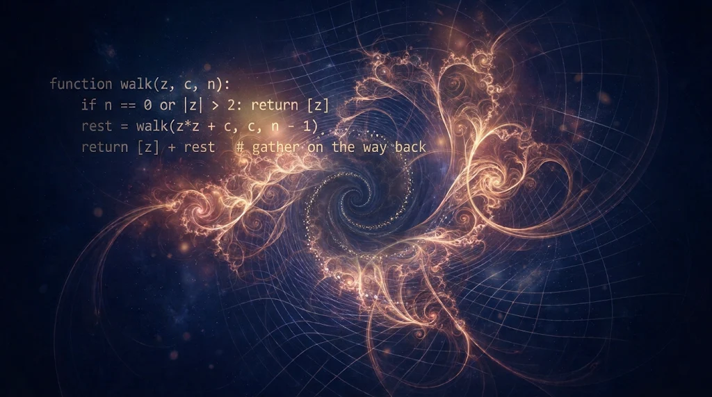

概要
起業家の歩みをジュリア集合の式に当てはめる、と聞くと、こじつけに見えるかもしれません。このページを読む効果について、pjdhiro はこう見ています。
pjdhiro の見方：こじつけのような論であることは否定しません。ジュリア集合に当てはめようとしている、というのは、むしろその通りで、それによって発散思考をしたい。ゴールでなく、次の足場としての発散です。アブダクションを妄想と演繹の中間くらいの精度になるようなイメージで推論した。その過程は、皆さんの足場となるかもしれないと思ったのです。
出発点は、pjdhiro の次の見立てです。
pjdhiro の見方：漸化式は、起業家のよう。Love と呼びたいものは、重力のようにドリフトする。それは、ジュリア集合の漸化式のようだ。
このページは、起業家の一歩を、ジュリア集合を描く式 z → z² + c に当てはめます。z を起業家の脳内の自己（気づきや決定も、その働きに入る）、z² を脳内で起きる自己と自己の掛け算、c を Love と呼びたいものの重力と、仮に置きます。
ジュリア集合とは
z → z² + c のような簡単な式をくり返すと現れる形です。名は、フランスの数学者ガストン・ジュリアにちなみます。二乗のはたらきは図「二乗を手で動かす」で、遡る一段は章「ジュリア集合を、逆にたどる」で、手で動かして見られます。図は、このページで計算して描きました（計算は Claude）。出典：J. Milnor (1990) "Dynamics in One Complex Variable: Introductory Lectures"（arXiv の本文で照合済）。くり返しても遠くへ行かない点の集まり（充填ジュリア集合）の縁がジュリア集合であることは、§17 の補題 17.1（p.17-1）。マンデルブロ集合の定め（0 から打った値が遠くへ行かない c の集まりで、そのとき形がひとつながりになる）は、付録 F（p.F-1）。pjdhiro の問い：ジュリア集合のような何かが、神・愛・美のポテンシャルなのではないか。
ここでのポテンシャルは、pjdhiro の言葉では「場と呼びたいような、可能性」です。
起業家の一歩の中で、自己と自己の掛け算のようなものが起きている、と見ます。もしも自己が一つでないなら、掛け合わさる自己達そのものが、まだ形になっていない可能性なのかもしれません。Love と呼びたいものを駆動源として、起業家が意思決定していると見たら、その可能性の場は、ジュリア集合のようなものかもしれません。これがこのページの主題です。その場には、美の定義から近寄り、美は起業家のエネルギーに近いのかもしれない、という仮説を置きます。
式を打っていくと、一定の力（c）、一か所へ寄ろうとする渦のような軌跡、その軌跡を惹きつける届かない一点、の三つが見えてきます。起業家を駆るものは、一定の力と届かない一点という、Love の二つの面かもしれません。一定なのは一歩ごとに同じだけ足す働き方で、Love と呼びたいものの c の値は一つに決まらないのかもしれません。「私」は、ありえたいろいろな c の縁の点が重なって、半径 2 の線の内に、横に長い雲として形作るもの（円の雲）で、外へ散ったものでも一点へ寄ったものでもない点によって、ギリギリ保たれます。ジュリア集合は、その軌跡を眺めるために付けた星座の名で、神・愛・美のポテンシャルは、その縁に感じられる所なのかもしれません。
前半は、起業家の行動の形を見て、ジュリア集合の式の変数が起業家の何に当たるかを、仮説として当てます。後半は、その式のふるまいを、神・愛・美として、Love駆動開発の視点で読みます。最後に、pjdhiro が当初に思い描いていた形から同じ式を読み直し、結びで二つの読みを重ねて、問いに答えます。
- 第一部 起業家の行動は、入れ子の深さ優先探索のよう：起業家の行動の形を、木をたどる探索で見る
- 第二部 それは、ジュリア集合の漸化式のようだ：式の変数が、起業家の何に当たるかを、一つずつ見る
- 第三部 式を逆にたどると、どんなポテンシャルが見えるか：式を逆にたどり、起業家を駆るものが出てくる場を探す
- 第四部 美は、起業家のエネルギーに近いのかもしれない：美の定義から入り、同じ場に近寄る
- 第五部 当初の直感から、もう一度読む：たくさんの点を前へ打ち、散るものと残るものから読み直す。円の雲の「私」を、人一般へ広げてみる
- 第六部 AI に、リーマン予想で考えてもらう：工事中。素数の波とジュリア集合の波を比べ、駆動源の読みと、美と畏怖が現れる所に当てる入口
- 結び 三つの星を結び、全体を感じる：五部の読みを重ね、冒頭の問いに答える
- 巻末：置いた仮説を二つの読みで並べたまとめと、原典を読む順
第一部
起業家の行動は、入れ子の深さ優先探索のよう
深さ優先探索は、見つけた所から入れ子になって続く
起業家は、どう決めて進むのか。いちばん簡単に書くと、次のくり返しになります。pjdhiro が書いた疑似コードです。
# 起業家の漸化式 1：起業家の一歩
今の自分 = はじめの自分
while 続ける:
会って変化した部分 = 人に会う(今の自分)
今の自分 = 今の自分 ＋ 会って変化した部分今の自分に、人に会って変化した部分を足したものが、次の自分になります。前の値から次の値を決めるので、漸化式の形です。
詳しく — 漸化式を、フィボナッチ数で一歩ずつ見る（図）
たとえば、フィボナッチ数は「前の二つを足す」と決めて、1、1 から始めます。1 + 1 = 2、1 + 2 = 3、2 + 3 = 5 と進み、出てきた値に、また同じ決まりを当てます。下の図で、一歩ずつ進めてみてください。
漸化式：前の値に決まりを当てて、次の値を出す（フィボナッチ数）
▶ で再生、「一歩進める」で一歩ずつ
外から見ると、人に会う、をくり返しているだけに見えます。その一歩の中身は、どうなっているのか。pjdhiro の見立ての始まりは、リアルオプションが話題になったときの、一言でした。
pjdhiro の体験：リアルオプションの視点が話題になったとき、再帰と反復の関数の違いについて、プログラムを書かない人に、思いつきで「後置再帰って書いたことあります？」と聞いたことがある。伏線を回収するように、向こう側から統合しながら戻ってくるような、と。単なる再帰ではなく。その時、「商いは、飽きない」という言葉を思い出した。それは、抱持という概念につながった。
pjdhiro の見方：再帰で書きたくなるのは、深さ優先探索のようなプロセスだからだと思う。ツリーを扱う際の反復、そこでの試行錯誤。起業家や研究者のような、愚直に飽きずにやる姿勢を言いたかったのだと思う。
深さ優先探索は、木の形をした分かれ道をたどる手順です。一つの枝を選んだら、行けるところまで深く進み、行き止まりや外れなら、一つ前の分かれ目まで戻って、まだ試していない次の枝へ進みます。
では、一本の木をたどって何かを見つけたら、そのあとはどうなるのか。
pjdhiro の見方：DFS（深さ優先探索）の先で見つけたら、そこから、条件やパラメータを変えて、次の探索が違うツリーに対して始まるんじゃないかな。DFS に DFS が入れ子になっている、ということです。DFS を一回やって人生が終わり、ではないよね。
漸化式 1 の「人に会う」を、この入れ子の深さ優先探索の形に広げ、「商いは、飽きない」として、木と疑似コードに書いてみます。pjdhiro が言った後置再帰は、行けるところまで深く潜ってから、戻ってくるときに、たどった先のものをまとめる書き方です。図と疑似コードは Claude が書いたものです。
試す の一回が、木を一本たどることに当たります。外れ（×）なら戻って次の枝へ、見つけたら（★）、条件を変えた次の木で、次の 試す が始まります。Claude が描いた図です。# 商いは、飽きない（起業家の漸化式 1 を広げた再帰）
function 試す(いまの所):
経験 = 空
for 次の手 in 打てる手(いまの所):
結果 = やってみる(次の手)
経験に足す(経験, 結果) # 外れも、抱えたまま
if 外れ(結果):
continue # 戻って次の枝へ
if 見つけた(結果):
経験に足す(経験, 試す(条件を変えた木(結果))) # 違う木で次の探索
break
経験に足す(経験, 試す(結果)) # その枝を深く
return まとめる(いまの所, 経験) # 戻りながら、伏線を回収するように打てる手は、手持ちの手段から出します。やってみたことは、外れも含めて、経験として抱えておきます。外れでも、見つけたのでもなければ、出てきた結果に 試す をもう一度当てて、その枝を深く進みます。何かを見つけたら、条件を変えた違う木で、次の 試す が始まります。「試す」という一つの形（構造）を、くり返し当てていくので、自分を呼ぶ関数（再帰）で書きたくなります。
後置再帰なので、最後の行の まとめる は、先へ出した 試す が全部戻ってきてから動きます。外れも、違う木で見つけたものも、その場では意味を決めずに抱えたまま進み、戻ってくるときに、伏線を回収するように一つにまとめます。先へ進む途中では見えなかったつながりが、向こう側から戻ってくるときに見えてくる、という書き方です。外れたら戻って次の枝へ、見つけたら次の木へ進み、戻るたびにまとめ直す。それをやめずに続けるのが、「飽きない」です。
詳しく — 答えを急がずに抱えておくこと（抱持）
意味を決めずに抱えたまま進むところは、pjdhiro が後置再帰の話から思い出した「抱持」と重なって見えます。抱持は、「欠損駆動思考」の言葉で、欠けや違和感に気づいたとき、すぐに答えを出さず、問いのまま持ち続けることです。pjdhiro は、抱持には支えになる環境や関係が要り、不安の強いときや、発達の段階が手前のときには難しくなる、とも見ています。詳しくは「Love駆動開発と呼びたいもの」の章「信号と考えがずれると欠けを感じる」にあります。
起業家の行動は、この入れ子の深さ優先探索のようなものではないでしょうか。
補足：木で意思決定を見る、経営学のほかの見方
後置再帰のほかにも、経営学には、意思決定を木で描いて考える見方がいくつかあります。補足として、軽く触れておきます。下の図は、同じ形の木を、三つの位置から見たものです。
①は、未来を予測できるものとして先に木を全部描き、先の端を見比べて一本を選ぶ見方です（決定ツリー・リアルオプション・コーゼーション）。②と③は、木の中を歩きながら進む見方です（サイモンの迷路・エフェクチュエーション）。どの論をどの位置に置くかは、このページが割り当てたものです。
pjdhiro は、こう見ています。
pjdhiro の見方：起業家の探索的なエフェクチュエーションのようなことも、ツリー構造に見える。DFS（深さ優先探索）のように目的を変えながら、人に会って気づいたり約束したりする、という構造は変わらない。サラスバシーの言うことも、入れ子の DFS として、ツリーで表せそう。みんな、ツリーをどの位置からどう見ているかの違いで、群盲象を評すように見える。
pjdhiro の見方：探索をどうやるのか。未来の側が予測できるものとして、全探索するのか。未来は作られるかのように、入れ子の DFS で進むのか。サイモンの迷路も含めて、各論はこれでまとめて書けると思う。
詳しく — 未来を予測できるなら、木の全部を探して選ぶ（決定ツリー・リアルオプション・コーゼーション）
決定ツリーは、決めることを木の形に描き、分かれ道ごとに選べる道を並べて、それぞれの先を見込みます。先の端まで全部を見込みで比べ、良さそうな一本を選ぶので、木の全部を探す進み方（全探索）です。意思決定はこう進むものだ、と見られることがあり、それが正しい進め方だと受け取っている人も、少なくないのではないでしょうか。
経営学のリアルオプションも、同じ木の上で、先で続ける・やめる・広げる、を選べる権利の値打ちを見積もります。サラスバシーのいうコーゼーションは、作りたい結果を先に決め、そこへ至る手段を、見込みの利益で選び比べる進み方です。サラスバシーは、コーゼーションの土台の考え方を、未来を予測できる限り、未来をコントロールできる、とまとめています（2001）。どれも、未来の側を見込める木として先に描いておく所が、共通しています。
先行研究 — リアルオプションと、コーゼーション
サラスバシーは、2001 年の論文の表で、コーゼーションとエフェクチュエーションを並べました。コーゼーションは、結果が先に与えられ、その結果を作る手段を、見込みの利益で選び比べます。土台の考え方は、未来を予測できる限り、未来をコントロールできる、です。表は、コーゼーションを、予測できる面に目を向けるもの、エフェクチュエーションを、予測できない未来の、自分たちで左右できる面に目を向けるもの、と書き分けています。
リアルオプションについて、サラスバシーとデューは、新しい市場に入ることを、その市場に関わるオプションを買うことと見る論（ミラーとフォルタ、2002）を、ありうる市場の中を探して選ぶ見方の一つとして挙げています（2005）。サラスバシーは 2001 年の論文の推測の一つで、起業家（エフェクチュエーションで進む人）は、長期の計画や正味現在価値の分析を使うことが少なく、使うとしても、リアルオプションの形式ばらない形くらいだろう、と書きました。
原文
- サラスバシー p.251（表 1・Underlying logic）：コーゼーション "To the extent we can predict future, we can control it"／エフェクチュエーション "To the extent we can control future, we do not need to predict it"
- サラスバシー p.251（表 1・Nature of unknowns）：コーゼーション "Focus on the predictable aspects of an uncertain future"／エフェクチュエーション "Focus on the controllable aspects of an unpredictable future"
- サラスバシー p.251（表 1・Decision-making selection criteria）："Help choose between means to achieve the given effect"／"Selection criteria based on expected return"
- サラスバシーとデュー p.537："Miller and Folta (2002) take a similar view in 'Option value and entry timing' where they describe a firm's decision to enter a new product or geographic market in terms of purchasing an option on being involved in the market."
- サラスバシー p.261："effectuators are less likely to use long-term planning or net present value (NPV) analyses; instead, they are likely to be focused on the short term and, at most, to use informal versions of real options."
訳は Claude。
出典：Sarasvathy (2001) "Causation and Effectuation", Academy of Management Review 26(2):243–263（本文照合済。effectuation.org が置いた誌面の写し。pp.251・261）／Sarasvathy & Dew (2005) "New market creation through transformation", Journal of Evolutionary Economics 15(5):533–565（本文照合済。米海軍大学院の機関リポジトリの写し。p.537）
詳しく — 未来が作られるなら、木の中を歩いて進む（サイモンの迷路・エフェクチュエーション）
サイモンは、1956 年の論文で、生き物の生きる場を、迷路のような分かれ道の系として描きました。生き物は数手先までしか見えず、いちばん良い道を探しきるのでなく、十分に満たす道を選ぶ（満足化）、としました。木の中にいると、木の全部は見えません。
サラスバシーは、起業家の意思決定を調べ、コーゼーションと並べてエフェクチュエーションを書きました（2001）。手持ちの手段を先に置き、その手段で作れる結果のほうを選ぶ進み方です。失ってもよい分を先に決め、限られた手段でできるだけ多くを試し、うまくいかなければ、目的のほうを作り直します。土台の考え方は、未来をコントロールできる限り、未来を予測する必要はない、と書かれています。予測できない未来を、自分たちで形づくっていく見方です。
先行研究 — サイモンの迷路と、エフェクチュエーションの例
サイモンは、分かれ目の一つ一つを選ぶ点とし、枝を一つ選んで次の分かれ目まで進むことを「一手」と呼びます。生き物は数手先まで見え、その中に食べ物があれば、そこへ行く道を選べます。論文の結びでは、生き物は「最適」な道を見つける感覚も知恵も持たないので、すべての必要をある水準で満たす、満足化の道をたどるしくみを考えた、とまとめます。
サラスバシーの例では、カレーの店を開こうとした人が、まず昼の配達を数週間やってみて、喜ばれているのが料理より本人の人柄や話だと分かれば、店でなく、本を書き、話をする方へ進むかもしれません。失敗を避けるより、失敗を扱っていく、という見方です。
原文
- サイモン（節 Perceptual Powers, Storage Capacity, and Survival）："It is convenient to describe the organism's life space not as a continuous surface, but as a branching system of paths, like a maze, each branch point representing a choice point."
- サイモン（結び）："we are concerned only with finding a choice mechanism that will lead it to pursue a 'satisficing' path"
- サラスバシー p.245（定義）："Causation processes take a particular effect as given and focus on selecting between means to create that effect. Effectuation processes take a set of means as given and focus on selecting between possible effects that can be created with that set of means."
- サラスバシー p.252（許容できる損失）："Effectuation predetermines how much loss is affordable and focuses on experimenting with as many strategies as possible with the given limited means."
- サラスバシー p.247（カレーの店の例）："after a few weeks of trying to build the lunch business, she might discover that the people who said they enjoyed her food did not really enjoy it"
- サラスバシー p.259（失敗）："The normative aspects of effectuation ... would have to do with the 'management' of failures rather than with their avoidance."
- サラスバシーとデュー p.538："the transformation of current realities into new possibilities rather than search (however bounded or unbounded) and selection within exotic regions of the unknown."
訳は Claude。木や深さ優先探索のたとえは pjdhiro のもので、2001 年の論文の図は、手持ちの手段から、作れる結果の一つ一つへ、扇のように矢印が広がる形です（p.253）。
出典：Simon (1956) "Rational choice and the structure of the environment", Psychological Review 63(2):129–138（本文照合済。SAGE が公開している再録の PDF。頁は再録のもので、節の名で示した）／Sarasvathy (2001) "Causation and Effectuation", Academy of Management Review 26(2):243–263（本文照合済。effectuation.org が置いた誌面の写し。pp.245・247・252・253・259）／Sarasvathy & Dew (2005) "New market creation through transformation", Journal of Evolutionary Economics 15(5):533–565（本文照合済。米海軍大学院の機関リポジトリの写し。p.538。手段から人と関わり約束を重ねていく環の図は p.543）
詳しく — ②と③は、木を最後まで探しきらない所が重なる
pjdhiro の見方：サイモンの迷路を途中で止めるネズミも、エフェクチュエーションの分岐や決定がそこそこの段階で切り替わるのも、DFS の先で DFS が始まるのも、どれも同じものを指していると思う。
サイモンの生き物は、十分に満たす道が見つかれば、そこで探すのをやめます。エフェクチュエーションで進む人は、失ってもよい分の中で試し、そこそこの所で目的のほうを作り直します。入れ子の深さ優先探索は、見つけた所で、条件を変えた次の木へ移ります。三つは、一本の木を最後まで探しきらない所が、重なって見えます。
詳しく — 探して選ぶより、変えていく（サラスバシーとデュー）
サラスバシーとデューは、のちに、新しい市場は、ありうる市場の全体を探して選ぶこと（探索と選択）より、手元の現実を変えていくこと（変換）で生まれる、と見ました（2005）。見つけたものから次の木が立つ、という絵は、この変換の見方とも重なって見えます。Love駆動開発でも、pjdhiro は、ほどける・離れる・戻ることを開発に入れ、そのイメージを深さ優先探索で言っています（「Love駆動開発と呼びたいもの」の章「開発とは、何を指すか」）。
この三つの木を、過去・今・未来の時間の向きで並べ直すと何が見えるかは、時間の向き - 僕の前に道はないで見ています。
第二部
それは、ジュリア集合の漸化式のようだ
起業家の漸化式 2：ジュリア集合の漸化式の形
第一部の起業家の漸化式 1 は、一歩の結果が、次の一歩の出発になるくり返しでした。その一歩のくり返しについて、pjdhiro はこう見ました。
pjdhiro の見方：一歩のくり返しに、Love という重力のような c を加えて、非二元を考慮すると、ジュリア集合の漸化式に似ていた。
漸化式 1 の足し算の前に、今の自分を今の自分で掛ける一手を入れ、足すものを、一歩ごとに同じだけ引き寄せるもの（Love と呼びたいもの）に替えてみます。これを起業家の漸化式 2 とします。
# 起業家の漸化式 2：自己と自己の掛け算
今の自分 = はじめの自分
while 続ける:
今の自分 = 今の自分 × 今の自分 ＋ 引き寄せ記号で書くと、カードの式 z → z² + c になります。いまの値 z を二乗して c を足したものが、次の値になります。出てきた値に、また同じことをします。計算機で書くと、次のくり返しです。
# z → z² + c を前へ
z = 0
while 決めた歩数まで:
z = z*z + c詳しく — カードの「非二元」は、式のどこに当たるか
非二元は、二つが見分けられるのに、切り離せないことを言う語です。カードの「非二元を考慮すると」は、pjdhiro の読みでは、式の二か所に当たります。一つは z で、平面の上の一点で表す数は、横と縦の二つの成分を一つの数に持ちます（次の章）。もう一つは、一歩を逆に戻すときで、平方根が二つあるので、一つの点が、0 の周りに半回転した二つの写しに分かれます。pjdhiro は、それを ☯ のように見ています（第三部「ジュリア集合を、逆にたどる」）。
式の所は、z・z²・c の三つです。続く章で、一つずつ、起業家の何に当たるかを見ていきます。
z は、起業家の脳内の自己
仮説：z は、起業家の脳内の自己。気づくことも、決めることも、その自己の働きに入ります。
z が起業家の何に当たるかは、いくつもの置き方を行き来しました。行き着いたのは、二乗の所から決めることでした。次の章で、z² を、起業家の中で起きる自己と自己の掛け算と読みます。自己と自己を掛けるには、掛け合わさる自己が、起業家の中に要ります。だから z を、起業家の脳内の自己と置きます。自己が一つでないなら、z は、脳内のいくつもの自己が重なったものです。
式の z は、平面の上の一点で表す数（複素数）で、横の向き（実軸）と縦の向き（虚軸）の二つの成分を持ちます。このページは、横の向きに認知できるもの、縦の向きに認知し得ないものを当てます。脳内の自己にも、本人が気づいている面と、気づいていない面があるのかもしれません。
詳しく — z は何か、を考えた軌跡
はじめは、z を起業家の思考・心理・行動と置いていました。気づくことも、決めることも入る言い方です。人そのものを指す名でなく、働きの側で置いたのは、思想や DNA のような、よく使われる呼び名について、pjdhiro が次のように見ていたからです。
pjdhiro の見方：思想や DNA というものは、何でもいいけど、実軸、認知できるものだけを切り取った概念じゃないか？ 波間の渦のように、渦以外の波の存在が抜けているのではないか？ というのが、認知し得ない面。
「波間の渦」の渦と波は、「創造とは」が創造の五つの段（場・波・縁・渦・束）に置く語です。
そう置いたあと、二乗の所で、pjdhiro はこう問いました。
pjdhiro の問い：z の二乗に当てはまる、現実世界の起業家の行動が見つかるといいんだよね。心理面でも良いので。
z² に当てはまるものを探して、いくつかの読みを行き来しました。脳の中にいくつもの自己が重なっているのか。ユングの言う自我とシャドーのように、気づいている側と気づいていない側が、一緒に一歩を作っているのか。野中郁次郎が組織に見た知のらせんが、一人の中でも起きるのか（どれも、次の章の終わりの畳みにあります）。行き来した末に、脳の中に自己が複数いるのかもしれない、という仮説を置き、z を、起業家の脳内の自己と置き直しました。
詳しく — 平面の上の数（複素数）とは（図）
z は、ふつうの数ではなく、平面の上の一点で表す数（複素数）です。ふつうの数は、一本の数直線の上に並びます。複素数は、横の向き（実軸）に加えて、縦の向き（虚軸）にも広がります。横に x、縦に y 進んだ点を x + yi と書きます。i は、二乗すると −1 になる数で、縦の向きの 1 目盛りを表します。
複素数：平面の一点が、横と縦の二つの成分を一度に持つ
図をクリックすると、その点が z になる
pjdhiro は、初めの値は、起業家ごと、状況ごと、時代ごとにばらばらだと見ています。このページの図は、0 から始めた一例です。
z の二乗は、脳内の自己と自己の掛け算
足場は、自己には一つの中核が無い、とする神経科学のプレプリントです（畳み「先行研究 — 自己は、いくつもの重なりか」）。それを読んで、pjdhiro は、二乗をこう見ました。
pjdhiro の見方：自己は単一では無い。とするなら、二乗するように、自己と自己が創造的に協働するイメージです。
もしも自己が一つでないなら、二つの自己が掛け合わさる分は、どちらか一つの自己からは出てきません。自己と自己が協働して、一つでは出ないものを次の一歩に生む、と読めます。式では、z を二つの自己の重なり a + b と書くと、(a + b)² = a² + 2ab + b² の 2ab が、その掛け合わさる分に当たります（章の終わりの畳み「探った読み：ユングの自我とシャドー」の中の「自己と自己の掛け算を、式に当てると」）。
その置き方から、pjdhiro は、こうも見ています。
pjdhiro の見方：脳内の自己と自己の掛け合わせなら、脳内の自己”達”が可能性だよね。
詳しく — 二乗は、自分で自分を回すことでもある
式の上では、z に z を掛けると、z は自分の角度だけ回り、自分の大きさの分だけ伸び縮みします（図は「二乗を手で動かす」）。pjdhiro は、それを、自分で自分を回すように進むこととしても見ています。
pjdhiro の見方：自分自身と自分自身を回転させるように進む、という視点はどうだろうか？
その回転は、周りからはどう見えるのか。
pjdhiro の見方：起業家自身を回転させる、とは、周囲から見ると、「人に会って決める」を繰り返す、のようなシンプルな繰り返しに見える。でもそれは、認知できるものとしてそうで、実際は認知し得ないものも含まれるし、その存在は言語化できずに、認知されるものだけが切り取られる。
先行研究 — 自己は、いくつもの重なりか
- スキッパーら（2026・査読前のプレプリント）：自己の処理を調べた 912 本の脳画像の論文を集め直すと、自己には共通の中核が無く、散らばった脳の系がその時々に組む連合だった。「自己」は、系が一緒に働く組み合わせに付けた名だ、とする（bioRxiv の全文）
- ギャラガー（2013）：自己は、体・感情・人とのあいだ・語り・置かれた状況などの側面が型に組まれたもので、側面どうしの動的な相互作用から現れる（論文）
- ギャラガーとデイリー（2018）：側面は足し算の一覧でなく、一つの側面に手を入れると、ほかの側面も変わる（論文）
- ハーマンスら（2017）：自己は、多くの「私」の位置がやりとりし、張り合う場で、そこから前には無かった位置や連合が生まれうる（論文）
自己を複数の重なりと見る所と、重なりどうしが互いに変え合い、新しいものを生む所を借ります。それを起業家の一歩に当て、二乗の掛け合わせの項に見るのは、このページの仮説です。どれも本文で照らしました。訳は Claude。
詳しく — 探った読み：ユングの自我とシャドー
自我とシャドーの読みについて、pjdhiro は、今の仮の視点をこう言っています。
pjdhiro の見方：ユングのシャドーに気づいていないとします。z は客観的な自分です。中身は、自我とシャドーがいるとします。それには気づいていません。そういう視点で今考えていました。一つは、回転が自己認識とは違う。思いもよらない方向に進んでいく。もう一つは、2ab として新たな自分に気づいていく。分離と包摂で。自己刷新に気づくのは、これかもしれない。z の二乗は、a の二乗と b の二乗と 2ab の分だけの差が出る。そういうものを振り返って自己分析して、成長に気づくのでは？という意味です。私の今の仮の視点です。
自己認識が自我の側だけを見ているなら、実際の一歩は、見込みとずれていきます。そのずれを振り返ると、気づいていなかった自分が見えてくる、という読みです（式に当てた計算は、下の畳み）。
詳しく — 探った読み：野中郁次郎のらせんは、一人の中でも起きるか
野中郁次郎は、組織の中で、言葉にならない知と言葉にした知が入れ替わりながららせんを描く、と見ました（畳み「野中郁次郎の知識創造とは」）。それについて、pjdhiro はこう見ています。
pjdhiro の見方：あれは組織だけど、起業家一人の内面でも起きるのかもしれない。フラクタルに。
c は、一歩ごとに同じだけ引き寄せる
冒頭の見立ての「Love と呼びたいものは、重力のようにドリフトする」は、式では c に当たります。ドリフトは、流れに押されて、少しずつ漂うようにずれていくことです。
仮説：c は、Love と呼びたいものの重力。一歩ごとに、同じ向きへ同じだけ引き寄せます。一定なのは、この一歩ごとに同じだけ足す働き方です。c の値そのものは一つに決まらない、と置いています。c の地図（マンデルブロ集合）の全体が、Love と呼びたいものの取りうる値の場です（第五部の章「円の雲の「私」は、起業家に限らないのかもしれない」）。
「Love駆動開発と呼びたいもの」は、人やプロジェクトを動かしているもの（駆動源）を、Love と呼びたいものと置く読み物です。pjdhiro は、その Love と呼びたいものを、漸化式の c に置きました。第一部の木で言えば、人に会い、気づき、約束する一歩ごとに、毎回同じだけ加わるものです。土台には、Love と重力の構造の似かたを問う見方があります（読み物「愛は、重力に似ていないか」）。
pjdhiro の見方：愛は重力と似ていないか？ それは c と似ていないか？
脳内の自己が自分で自分を回すだけなら、式の値は、原点の周りで回り、原点からの距離が変わるだけです。そこに c を足すと、値は毎回、同じ向きに同じだけずれます。一歩ごとのずれは小さくても、くり返すうちに、値が外へ限りなく遠ざかるか、外へ出ずに残るかを分けます。物を同じように引き寄せ、通り道を少しずつ曲げていく重力のようなもの、とたとえられます。
詳しく — なぜ重力か、謎のまま残る駆動源、善悪の無いドリフト
エフェクチュエーションの論では、起業家を動かすものは謎のまま残っている、と pjdhiro は見ています。c は、その謎のまま残る駆動源を、一歩ごとに環の外から加わるものとして、式に置いたものです。
なぜ重力なのかを、pjdhiro は、符号の数から言っています。
pjdhiro の見方：＋の符号しかない物理の概念って、今のところ、それ（重力）が一番有名では？ 確認されていることの中では。
電気の力には、引き合う向きと退け合う向きがありますが、重力のもとになる質量には、知られている限り、符号が一つしかありません。式で符号が一つに当たるのは、c がいつも足され、引かれることが無い所だ、と見ます。c = −1 や −0.8 + 0.16i のように値に − が付いていても、それは引き寄せる向き（左や下）を表すだけで、一歩ごとに、その向きへ同じだけ足されます。
Love駆動開発で、pjdhiro は、同じ駆動が、成果と呼ばれる向きにも、お金や名誉や権力の向きにも、知識や子孫のようなお金にならないものの向きにもドリフトする、と見ています。どの向きも、善悪でなく、同等の現れと見ます（「Love駆動開発と呼びたいもの」で引いた見方）。式でも、c の値に、良い値と悪い値はありません。違う c は、違う形を残すだけです。
式の数学そのものは、Love駆動開発の章「数学の視点で見る」で見ています。この置き方を意思決定に当てた仮の案は、「意思決定とは」の巻末にあります。
平面の数で、式を一歩ずつ見る
この部で置いた仮説を、平面の上の計算に当ててみます。z = x + iy と書き、x を認知できる成分、y を認知し得ない成分と当てます。二乗すると z² = (x² − y²) + 2ixy になり、次の一歩の認知できる成分には、認知し得ない成分の二乗 y² が、引かれて入ってきます。認知し得ないものは、見えないまま、次に見えるものを変えているのかもしれません。二乗のはたらきは、下の畳みで手で動かして見られます。
詳しく — 二乗を手で動かす：角度は二倍、距離は二乗、z と −z は同じ所へ（図）
二乗には、式の上で二つのはたらきがあります。一つは、平面の上の点を、原点から見た角度を二倍にし、原点からの距離を二乗にすることです。距離が 1 より小さい値はさらに小さく、1 より大きい値はさらに大きくなります。もう一つは、向きが逆の二つの値 z と −z を、同じ一つの値に送ることです（二対一）。二乗したあとの値からは、二つのどちらから来たのかが分かりません。
二乗を手で動かす：角度は二倍、距離は二乗、z と −z は同じ所へ
点 z をつまんで動かすと、z²（赤）が動く
c も足してみる
第三部
式を逆にたどると、どんなポテンシャルが見えるか
第二部で z² と c を、こう置いてみて、pjdhiro は次の問いを立てました。
pjdhiro の問い：仮に、起業家（プロジェクト推進者）の行動の二乗という何かがあって、それが Love の力で引き寄せられるなら、起業家の行動の結果は、そもそもどんなポテンシャルだったのか？
第三部では、この問いと、概要の問い（ジュリア集合のような何かが、神・愛・美のポテンシャルなのではないか）を、同じ式を逆にたどって見ていきます。起業家の脳内の自己が一歩ごとに移っていった跡を、順に平面へ点として打っていくと（このページでは「前へ打つ」と言います）、どこに行き着き、そこから遡ると何が出てくるのか。
ジュリア集合を、逆にたどる
式の一歩は、逆に一段戻すこともできます（数学では、一歩を逆に戻す決まりを逆写像と言います）。c の分を引いてから、平方根（√）を取ります。二乗して 4 になる数が 2 と −2 の二つあるように、平方根はプラスとマイナスの二つあります。
起業家の漸化式 2 を、逆にたどる向きへ広げると、今の自分から一つ前の自分を出す式になります。
# 起業家の漸化式 2 を逆にたどる（逆写像）
while 続ける:
前の自分 = ±√(今の自分 − 引き寄せ) # 答えは二つ二乗で角度が二倍になったのを逆に戻すので、平方根で角度は半分になります。マイナスの平方根は、もう一方を 0 の周りに半回転させた写しになります。
その一段を、下の図で一歩ずつ見ます。図の左は、c を選ぶための地図で、マンデルブロ集合（「ジュリア集合とは」の地図）です。右の図の背景には、その二つの写しを、陰陽の印（☯）のように薄く描いています。
遡る一段：円を、c の分だけ戻して ±√ で二つに分け、畳む
c を選ぶ地図（黒い形の中をクリックすると c が変わる）
大きさ 2 の円を、一歩ずつ遡る（▶ か「一歩進める」をクリック）
±√(w − c) で一段ずつ遡ります。一段は「− c」「√」「−√」の三歩で、その一歩で起きたことを図の中の字幕で添えています。色は、その点が最初の円のどこから来たかで、同じ色の所は、最初の円の同じ所から来ています。薄い灰の線は、その一歩の前の形です。背景に薄く描いた陰陽の印（☯）は、上の pjdhiro の見方の所（√ で角が半分になって右半分に縮み、−√ の半回転の写しが左半分を埋める）に重ねたものです。段を重ねるほど、円は細かく畳まれて、ジュリア集合の形に寄っていきます。
詳しく — 図の見方：一段を三歩に分けて遡ると、円が畳まれる
この図は、Steven Wittens の「How to Fold a Julia Fractal」（2013）の見せ方に倣って、このページで新しく描いたものです。Wittens は、点が収まる円を、遡る向きに一段ずつ畳んでいくと、ジュリア集合の形になる様子を、動く図で見せています。
円の上の一点は、一段遡るごとに二つに分かれ、二つの点は、0 を挟んで向かい合います。前の曲線の一周が、右の半分と左の半分に一回ずつ写り、円が自分に巻きついて畳まれます。くびれと突き出しは、段ごとに細かくなっていきます。
二歩目の「√」は平方根の主値で、曲線は、0 から左へのびる線（負の実軸）で切れます。曲線の内側は、遡った段の数だけ前へ打っても大きさ 2 を超えない点の集まりで、段を重ねるほど、くり返しても遠くへ行かない点の集まり（充填ジュリア集合）に寄ります。段が深くなると、線は、境目の細かい入り江（巻き込み）の奥まで追いきれずに横切るので、薄くしています。形は、内側の塗りで見られます。
図の最初の c = −0.79 + 0.13i は、左の地図の黒い形の中で、本体の左隣の丸い房の、ふちの近くにあります。形はひとつながりなので、段をいくら重ねても曲線は一本のままです。ふちに近いので、境目の模様は、渦を巻くように巻き込みます。巻き込みは、20 段を過ぎたころから見えてきます（図は 30 段まで）。ページの上の「ジュリア集合とは」のサムネイル（c = −0.8 + 0.16i）と、ほぼ同じ形です。その −0.8 + 0.16i は、黒い形のわずかに外にあります。0 から前へ打つと 39 歩目で大きさ 2 を超えるので、39 段目で曲線は二つに切れ、遠くへ行かない点は、かけらに分かれます（この図の 30 段までは、一本のままです）。
値を前へ打つと渦になり、遡るとジュリア集合の形になる
よく見るジュリア集合の絵は、平面の点を一つずつ出発点にして式をくり返し、遠くへ飛んでいくかどうかで色を付けた絵です（章の終わりの畳みで見られます）。全部の点を試す、全探索の絵です。この章では、0 の一点から前へ打った値 z₀, z₁, z₂…（赤）が、一本の道を歩いた跡です。その赤の一点から、同じ式を逆に一段ずつ遡ると、遡りは木になります。第一部の探索の木とは別の、遡る向きの木です。二つの木を時間の向きで並べると何が見えるかは、時間の向き - 僕の前に道はないにあります。
遡りの木：赤の一点から、一段ごとに +√ と −√ の二つに分かれる
木（根が赤の一点。左の枝が +√、右の枝が −√）。点をクリックすると、根からの道が出る
同じ点を平面に打つ（薄い色の形の縁が、ジュリア集合の境目）
z₅ です。一段遡るごとに、どの点も +√(w − c) と −√(w − c) の二つに分かれ、k 段目は 2 の k 乗の点になります。木は 5 段まで、平面には 10 段まで同じ点を打ちます（紺が浅い段、金が深い段）。赤い太線は、実際に前へ通ってきた道で、5 段で出発の 0 に着きます。ほかの枝は、通らなかった一つ前で、段が深いほど、薄い色の形の縁（ジュリア集合の境目）に寄ります。木の点か平面の点をクリックすると、その点と、根からの +√・−√ の道が出ます。計算は Claude。木の図の最初の c = −0.79 + 0.13i は、ハート形の左隣の房にあり、前へ打つと、二つの点を行き来しながら寄っていきます。下の図は、c を、前へ打つと渦になる黄金角の c に替えて、この遡りを前へ打った赤の渦と一枚に重ね、段を 100 まで深くしたものです。
前へは渦、遡ると境目：同じ式を、0 から前へ打ち、その一点から遡る
c を選ぶ地図（クリックすると c が変わる）
0 から前へ打った値（赤）と、赤の一点から遡った枝（紺から金）。図をクリックすると、遡り始める赤の点が変わる
決まった c で見る
歩数と段数を変える
自分で c を選ぶ
回る角度と寄る倍率、または c の実部と虚部で選びます。どちらで動かしても、もう一方が揃います。
手を動かして確かめる — こう動かすと、こう見える
- 遡る段数を 0 にして、「一段深く遡る」を何度かクリック：紺の点から、一段ごとに枝が二つに分かれます。赤い太線（実際に通ってきた道）は一通りだけで、ほかの枝は渦から離れて外へ広がり、8 段ほどで境目の形が見えてきます。
- 遡る段数を 100 に戻す：12 段より深い段は、金の点が境目の上に細かく散ります。深く遡るほど、どこから遡っても同じ境目に寄ることが見えます。
- 「前へ打つ歩数」を 12 ほどに下げる：100 歩目の値は寄る一点にほとんど重なっていて、実際に通ってきた道もその一点に重なって見えません。歩数を下げると、赤い太線が渦をさかのぼって 0 のほうへ戻る道として見えます。
- 図の中の赤い渦の別の点をクリック、または「前へ打つ歩数」を動かす：どの歩の値から遡っても、実際の道の一通りのほかは、同じ境目に散ります。
- 「最初から」をクリックして「再生」：赤い点が一歩ずつ打たれ、渦を巻いて一か所へ寄っていきます。遡りは、そのつど最後の歩の値から描き直されます。
- 「よく見るジュリア集合の絵を薄く重ねる」：深い段の点が、その絵の縁と重なることを確かめられます。
- 畳み「自分で c を選ぶ」を開き、回る角度を 120° や 90° の近くにする：寄っていく点が、ほぼ三本、四本の筋に並びます。黄金角（137.5°）では、筋がそろわず、ひまわりの種の並びに近い散らばり方になります。
- 寄る倍率を 1 に近づける：寄るのが遅くなり、渦の巻きが増え、境目の形も変わります。
- 左の地図で、黒い形の外をクリック（または「c = 0.3」）：赤は外へ出て、遡った枝は一つながりでない塵のように散ります。
前へ進めると、赤い点は、一か所の周りを回りながら少しずつ寄っていきます。これが渦です。渦になるのは、c がマンデルブロ集合の本体（大きなハート形）の中にあるときです。点は寄り続けますが、止まりはしません。寄っていく一点は、止まる所ではなく、くり返しても外へ出ずに形として残る所、と読んでみます。
後ろへ遡ると、一段ごとに道が二つに分かれ、8 段ほどで、ジュリア集合の境目に散らばります。実際に通ってきた道は、そのうちの一本だけです。
同じ式なのに、前へ進めるか、後ろへ遡るかで、まるで違う形になります。
図を描く前、pjdhiro は、別の形を思い描いていました。その形からの読み直しは、第五部「当初の直感と、そこから組み直した骨組み」にあります。
この図を見て、pjdhiro は次の問いを立てました。
pjdhiro の問い：この渦の軌跡と、ジュリア集合の関係が何を意味するのか。それを直感で読み取りたいのです。
起業家のたとえに戻すと、前へ打った赤は、起業家の脳内の自己が一歩ごとに移っていった跡で、実際に通ってきた一通りの道と読めます。遡ると、一段ごとに、ありえた一つ前が二つに分かれます。pjdhiro は、起業家は渦を巻くように進み、違うルートで来ていたら、その渦はジュリア集合のような軌跡だったかもしれない、と見ています。赤い太線のほかの枝は、認知されなかった道かもしれず、それらはジュリア集合の境目に散ります。
この振る舞いを、Love駆動開発の言葉で読んでみます。読みは一つに決まらないので、いまの読みを並べます。
- 残ると遠ざかる：
cを足すくり返しで、外へ出ずに残るのは、関わりが続いて形になること、外へ遠ざかるのは、散って切れること、と当ててみることができます。 - 駆動源：境目の形を決めているのは
cです。同じcなら、どの値から遡っても同じ境目に寄ります。 - 場：境目は、遠くへ行きそうで行かない所で、認知されなかった道の散る所です。pjdhiro は 2025 年の記事で、そこを「創造が生まれる土壌」と見ました。
- 渦：前へ打った渦は、「創造とは」が五つの段に置く渦かもしれない、と pjdhiro は見ています。第五部では、渦の語を、
zの値を打った見た目の形（軌跡の渦）と、五つの段の渦（散逸構造）とに分けて読み直します（第五部の海の比喩の段）。
詳しく — よく見るジュリア集合の絵と、ほかの c（c を選ぶ地図）
よく見るジュリア集合の絵も、ここで見られます。左の地図で c をクリックするか、下のスライダで c の実部と虚部を動かすと、右に、その c で残る形が出ます。遡ると境目に集まる様子は、本文の図「前へは渦、遡ると境目」で見られます。
よく見るジュリア集合の絵：c を一つ選び、平面の点を一つずつ試して、遠くへ行くかで色を付ける
c を選ぶ地図（c の平面）。クリックすると c が変わる
その c で残る形（z の平面）
z → z² + c をくり返しても遠くへ行かない c の集まり（マンデルブロ集合）。右は、選んだ c で、くり返しても遠くへ行かない点（濃い色）と、行ってしまう点（薄い色ほど早く行く）。c を地図の外に置くと、形はひとつながりでなく、かけらに分かれます。出典
出典：J. Milnor (1990) "Dynamics in One Complex Variable: Introductory Lectures"（ストーニーブルック数理科学研究所の講義録。1991 年 9 月の改訂版。arXiv の本文で照合済）。ジュリア集合の一点から一つ前の点をくり返し集めると、ジュリア集合のどこにでも近づくこと（定理 3.9）と、それを使う絵の描き方は p.3-6。図の値（c ≈ −0.378 + 0.562i、不動点の大きさ 0.485、一歩ごとの回転 137.5°・0.970 倍、前へ打った値の大きさの最大 0.725）は Claude が計算した。
駆動源と場は、別々のものではないのか
式で確かめられるのは、遡った先の境目の形が c ごとに決まる、というところまでです。ここからは、式の外へ出ます。Love と呼びたいものを駆動源として、起業家が意思決定していると見たら、その場はジュリア集合のようなものかもしれない。その仮説で、第三部の頭の問いに近寄ります。
pjdhiro の見方：起業家は、自身を回転させるように、認知できるものと、し得ないもので進む。それは、体感では、神・美・愛のようなもので駆動する。それは、ジュリア集合のようなポテンシャルから出る。かな。
一歩ごとに引き寄せる c と、その c が形を決める境目は、別々のものではないのかもしれません。問いの筋の「駆動する」と「ポテンシャルから出る」は、この関係に重ねて読めそうです。冒頭の問い「ジュリア集合のような何かが、神・愛・美のポテンシャルなのではないか」も、この重なりから読めるかもしれません。
第四部
美は、起業家のエネルギーに近いのかもしれない
美の定義から入り、起業家を駆るものに近寄る
第三部には、二つの問いが残りました。前へ打った渦と、遡ったジュリア集合の境目の関係は、何を意味するのか。起業家の行動の結果は、そもそもどんなポテンシャルだったのか。pjdhiro は、この二つに、美の定義から入って近寄ろうとしました。そう決めたとき、pjdhiro は、行き先も一緒に見ていました。
pjdhiro の見方：美とは、起業家のエネルギーと近いのかもしれない。
この部は、この仮説を述べます。美は、美しさと恐ろしさの入り乱れたところから出るのではないか。その出てくる場は、神や愛の出てくる場と同じで、ジュリア集合のような形をしているのではないか。もしもそうなら、愛で駆動するプロジェクトの場の形も、そこから生まれ、どの大きさでも同じ形が現れるのではないか。そうであれば、美は、起業家を駆るエネルギーに近いのかもしれない。あいだには飛躍があります。
詳しく — この仮説の出どころ（創造の五つの段と、30 の分野）
pjdhiro は、ジュリア集合を見て、創造の五つの段（場・波・縁・渦・束）の着想を得ました。そのあと「創造とは」で 30 の分野の論を調べる中で、似た構造が、いろいろな分野に見つかってきました。この部の仮説は、その延長にある着想です。
美は、恐ろしさの入り乱れたところから出るのか
pjdhiro の仮説：黄金比のひまわりの渦は、美しさを感じる。黄金比というのも、美しさの定義の一つ。そのポテンシャルは、ジュリア集合の形。それは、見る人によっては、恐ろしさや醜さも感じる。美は、美醜・恐怖の入り乱れたところから出る、という解釈。
ひまわりの種は、黄金角（約 137.5°）ずつ回る渦に並びます。第三部の図の最初の c は、前へ打った値がこの角度ずつ回るように選んだ値です。第三部で問いに残った、渦と境目の関係について、pjdhiro は、渦の奥にあるもの（ポテンシャル）が、同じ式を遡ると出てくるジュリア集合の形だ、と見ています。
黄金角の渦と、ひまわりの並び：同じ角度で回り、距離の変わり方だけが違う
渦：黄金角の c で前へ打った値（寄る一点の周りを拡大）
ひまわり：種の並べ方（黄金角・距離 √n）
詳しく — 黄金比と黄金角とは
黄金比は、線を長い部分と短い部分に分けたとき、全体と長い部分の比が、長い部分と短い部分の比に等しくなる比です。値は (1 + √5) ÷ 2 で、約 1.618 です。古くから、美しい比の一つとして語られてきました。黄金角は、円の一周 360° を黄金比で分けたときの小さいほうの角で、360° ÷ 1.618² の約 137.5° です。
詳しく — ひまわりの並びを描く式（フォーゲルの式）
ひまわりの頭花の小花（種）の並びは、フォーゲルの式で描かれてきました。中心から外へ n 番目の小花を、n × 137.5° の向きに、中心から √n に比例する距離に置く式です。植物の形を計算で描く研究の本は、この番号の振り方は実際の小花の齢と逆だ、と書いています。外の小花ほど古い、ということです。
出典：Prusinkiewicz & Lindenmayer (1990) The Algorithmic Beauty of Plants, Springer（本文照合済。著者の研究室〔カルガリー大学〕が公開している電子版。第 4 章 pp.100–101。フォーゲルの式 4.1 と、番号が小花の齢と逆であること）。
お寺や教会、美術品などを前にして、美しいのに畏れを感じることがあります。ジュリア集合の形を見たときの印象を、pjdhiro はこう言います。
pjdhiro の体験：ジュリア集合の形状を見た時に感じる、美しさ・恐怖・禍々しさのような印象は、キリスト教の絵画などを見た時に感じたイメージに近い。私の感覚の類似から、神と呼びたいもの、畏怖のような、頼れる存在でありながら恐怖する存在とも言えそう。これが足場です。
18 世紀の思想家バークが、神の力の前で、人は身震いしながら喜ぶ、と書いた段を読んで、pjdhiro はこう言いました。
pjdhiro の体験：これを体感した時の表現は、分裂に近いのでは？だと思います。強烈な退行が身体に出る。たとえば、高所恐怖症や寒気など。
詳しく — 分裂とは（クライン）
ここでの分裂は、精神分析家クラインの言う分裂です。一つの相手を、よい面と悪い面に割って持つ心の動きで、頼れる像と恐ろしい像が、一つの相手から対で出てきます。
先行研究 — 美と恐ろしさを、一つの体験の中に見た論
- リルケ『ドゥイノの悲歌』（1923）：美は、恐ろしいものの始まりにほかならない（Zeno.org の翻刻）
- バーク『崇高と美の観念の起原』（1757）：美は愛を起こす性質から、崇高は恐ろしいものから来る。神の力の前で、人は身震いしながら喜ぶ（初版の走査・増補後の本文の走査）
- オットー『聖なるもの』（1917）：聖なるものの体験は、退かせる戦慄と、惹きつける魅惑の、対照の調和（第 13 版の走査・英訳の走査）
- 石津とゼキ（2014）：崇高と美は別々の脳の系に乗るが、崇高と感じた写真は、美しいとも醜いとも感じられうる（論文）
- クライン（1946）：分裂は不安への守りで、理想化は迫害の恐れと対で出る（PEP-Web の記録）
- カーハート＝ハリスら（2014）：退行した認知は、秩序と無秩序の境目（臨界）にあり、そこでは元型的な主題が意識に上る、という仮説（論文）
- 数学の式の美しさが、絵や音楽の美と同じ脳の所で働く研究は、読み物「美とは」で見ています。
どれも本文で照らしました。訳は Claude。
ジュリア集合に似た形は、神・愛・美の出てくる場なのか
美が恐ろしさと入り乱れて出てくるなら、その出てくる所は、どんな形をしているのか。ジュリア集合に似た形を、自然の中に探していきます。
pjdhiro の仮説：ジュリア集合の形に似ているものを、探して挙げていくのがいいね。地形とか、植物とか、化学反応とか、細胞とか。実は、自然界で善悪判断のない形状が列挙される。
挙げられた形は、どれも、誰かが良い悪いを判断して作った形ではありません。ジュリア集合の形も、式をくり返したときに、外へ出ずに残る所の境目に、良いも悪いもなく現れます。
工事中自然の中から、ジュリア集合に似た形を挙げていくところは、まだ書いていません。
形の話は、神と愛の話へ進みます。pjdhiro は、神と呼ばれる存在を感じてしまう心の作りを、ユングの元型（多くの人の心に共通して湧く像の型）から見ていました。その話を受けて、仮説は次のようにまとまりました。
pjdhiro の仮説：ジュリア集合のようなものが、神や愛のようなポテンシャルの場で、そこから元型のようなイメージが湧いたり、美と呼ばれたりするものが生まれる。それらは、心を惹きつけられる、という意味で同じ。
仮説の芯は、神・愛・美は、どれも心を惹きつけるという点で同じで、その惹きつけるものが出てくる場が、ジュリア集合のような形をしているのではないか、ということです。
このページは、c を、一歩ごとに同じだけ引き寄せる、Love と呼びたいものの重力と仮に置いてきました。心を惹きつける、という言い方は、その c の働きと同じ向きを指しているように見えます。惹きつけられた先で、像が湧けば元型と呼ばれ、心が動けば美と呼ばれる、と読めます。
先行研究 — 惹きつけるものと、その場の形を書いた論
- サッコ、マークス＝ターロウ、ベイトマン（2024）：マンデルブロ集合の美しさは境目にあり、実数と虚数をまたぐことは、ユングの意識と無意識の考えを補う（論文）
- マークス＝ターロウ（2010）：フラクタルは境目を占め、分けると同時につなぐ。ウィニコットの潜在空間（potential space）は、フラクタルの境目で写せる（論文）
- L. カウフマン（2005）：くり返しの行き着く形（不動点）は、観察する者と世界が分かれていない、くり返しの関わりの印（論文・著者の大学の頁の PDF）
- アリストテレス『形而上学』Λ 巻 7 章：はじめの動者は、動かずに、愛されるものとして動きを生む（MIT の英訳）
- ホワイトヘッド『過程と実在』（1929）：神は「感じへの誘い（lure for feeling）」で、可能性（potentiality）の絶対の富（走査）
どれも本文で照らしました。訳は Claude。
美・神・愛が同じなら、プロジェクトの場の形は
神・愛・美が、心を惹きつける一つの場から出るなら、プロジェクトの場とは、どうつながるのか。
pjdhiro の仮説：もしも、美・神・愛が同じものを指しているとしたら、愛で駆動するのがプロジェクトだとしたら、その場の形は、美のポテンシャルであるジュリア集合から生まれる。かなり飛躍のある仮説ですが。
Love駆動開発は、プロジェクトを動かしているもの（駆動源）を、Love と呼びたいものと置きます。前の章では、神も愛も美も、心を惹きつけられる、という点で同じ、と置きました。ここでは、そこに「もしも」を二つ重ねて、プロジェクトの場の形へつなぎます。
「もしも美・神・愛が同じなら」という所にも、古典の足場があります。三つを一つの名に重ねた古典、愛と美を生み出すことと結んだ古典、愛を渦や円い動きとして書いた哲学者です。
先行研究 — 美・神・愛を一つに重ね、生み出すことや渦と結んだ古典
- 偽ディオニュシオス『神名論』第 4 章（5 世紀末〜6 世紀ごろ）：神を善・美・愛の名で呼ぶ。美は、すべてのものを自分のほうへ呼び寄せるので「美」と呼ばれ、すべては美と善への憧れに動かされる（ロルト訳 1920 の走査。7 節 p.95・10 節 pp.99–102。ギリシア語の原典とは照らしていません）
- プラトン『饗宴』：愛する人たちが目指すのは、美の中で生むこと。美を順に見ていく人は、終わりに突然、美そのものを見る（ジョウエット訳。ディオティマの話の段）
- エンペドクレス（紀元前 5 世紀）：愛が渦の中心に達したとき、すべてが集まって一つになる（バーネットの英訳。断片 35・p.211）
- パース「進化的な愛」（1893）：愛の運動は円く、作ったものを独立へ押し出すことと、調和へ引き寄せることが、一つの衝動の中にある（原文と対訳。p.177。読み物「パースの創造的な愛と、アブダクション」）
三つを一つの源に重ねる所、愛と美を生み出すことと結ぶ所、愛を渦や円い動きとして書く所を借ります。その源の形をジュリア集合のようなものに見て、式の渦と重ねるのは、このページの仮説です。どれも本文で照らしました。訳は Claude。
どの大きさでも同じ形なら、至る所に現れる
ここまでの仮説が、大きさを変えても同じ形で成り立つとしたら、どうなるのか。
pjdhiro の仮説：その仮説が、あらゆるスケールで自己相似だとしたら、宇宙の場や、光の励起する背景など、至る所にジュリア集合が現れる。30 領域で創造が報告された理由の仮説です。
自己相似は、部分を拡大すると全体と同じ形が見える、という性質です。ジュリア集合の境目も、どれほど拡大しても込み入った模様が続きます。もしも美・神・愛の場の形が、どの大きさでも同じなら、宇宙のような大きなものから、人の心の小さな動きまで、至る所に同じ形が現れることになります。pjdhiro は、起業家・組織・社会がフラクタルで、起業家の内面の微細な心理要素も同じ形で相似する、とも見ています。どこかの大きさで当てはまるものが見つかれば、ほかの大きさにも当てて読める、という見方です。
どの大きさでも同じ形、という所には、部分に全体が入るという東アジアの古典の見方が近く、至る所にある創造を神の名と結んだ研究者もいます。
先行研究 — 部分に全体が入る形と、至る所にある創造
- 法蔵『華厳金師子章』（7〜8 世紀）：一本一本の毛の中に限りない獅子が在り、それがまた一本の毛の中に入る。重なり重なって尽きない様を、帝釈天の網の珠にたとえる（CBETA の頁。宋の淨源の註の本〔大正蔵 T45 No.1880〕に引かれた本文。p.665c23–27）
- S. カウフマン『聖なるものを再発明する』（2008）：神とは、自然の宇宙・生物圏・人の文化の絶えざる創造性に、私たちが選んで付けた名だ、という見方を出す（Edge の頁「Breaking the Galilean Spell」。序文と第 1 章の抜粋で、本の頁は照らしていません）
部分に全体が入る形と、至る所にある創造に神の名を当てる見方を借ります。それを、どの大きさでも同じ形が現れる、というこの章の仮説に重ねるのは、このページの仮説です。どれも本文で照らしました。訳は Claude。
ならば、愛もそうかもしれない
美は、起業家のエネルギーに近いのかもしれない。部の頭に置いたこの仮説に、pjdhiro は、こう添えています。
pjdhiro の見方：ならば、愛もそうかもしれない。
愛が起業家のエネルギーに近いなら、この結びは、読み物「Love駆動開発と呼びたいもの β」につながります。Love駆動開発は、人やプロジェクトを動かしているもの（駆動源）を、Love と呼びたいものと置いて、プロジェクトがどう進むかを見ています。このページの問いは、その駆動源の出てくる場の形を、ジュリア集合に見てみたものです。
このページは、c を Love と呼びたいものの重力と仮に置き、起業家の脳内の自己を一歩ごとに引き寄せるもの（駆動源）と見てきました。章「c は、一歩ごとに同じだけ引き寄せる」で、エフェクチュエーションの論では起業家を動かすものは謎のまま残っている、という pjdhiro の見方に触れました。この部の仮説は、その謎の所に、美・神・愛と同じものを置いてみる見方です。起業家が何かに惹きつけられて動き出すとき、その惹きつけるものは、美しいものに心を惹かれるときと同じものかもしれない。結びは、そう読めます。章「駆動源と場は、別々のものではないのか」の問いの筋の「体感では神・美・愛のようなもので駆動する」は、この結びを、起業家の体感の側から言ったものとして読めます。
第五部
当初の直感から、もう一度読む
当初の直感と、そこから組み直した骨組み
第三部の図「前へは渦、遡ると境目」を見たあと、pjdhiro は、図を描く前に思い描いていた形を、こう話しました。
pjdhiro の見方：私は当初、発散して飛び散ったエネルギー以外の収束、という感じのものになるんだろうと思っていました。淘汰やサバイブのようなものです。それのルーツとして、性交時の射精のエネルギーのジュリア集合のようなポテンシャルから、収束的に一点が卵子に到達するような。我々は死に向かって、自己という脳のエネルギーをほとばしるように拡散させながら生きるのだろうと。ギリギリ自我として、昨日の自分が、さも今日の自分と同じであるかのように感じながら。体の細胞も水分も、自我を構成する身体や脳神経や信号やいろいろなものを入れ替えながら、「私」という一点をギリギリ保つような。そういうエネルギーを拡散させる生き物として記述したかったんだと思います。
そのうえで、pjdhiro は、こう添えています。
pjdhiro の見方：まだ、その直感は残していますが、今回は、そうではない方向に Claude と進みました。私のコントロールというより、Claude の理解がそうだったように思います。
この直感の側から、たくさんの点をいっせいに前へ打って式を読み直し、まとめたのが、次の骨組みの一文です。Claude が書き、pjdhiro がしっくりくると答えた一文です。
この一文の骨組みを、式の所ごとに並べます。真ん中の列は直感への当てはめで、仮に置いたものです。右の列は、式で確かなことです。
| 式の所 | 直感への当てはめ（仮） | 式で確かなこと |
|---|---|---|
z（出発点の雲の一つひとつの点） |
脳内の自己たち。エネルギーの粒で、可能性 | 平面の上の一点 |
| 出発点の雲 | 初期値。そもそもの場。本当の意味での場のような、宇宙の場のようなもの（海の比喩では海）かもしれない。射精のエネルギーの像は、直感のルーツのたとえで、出発点の雲の名ではない | ばらばらの初期値。どこから放ってもよい |
一歩 z → z² + c |
前へ、死に向かって。遡らない | 一方向のくり返し |
| 半径の円を超える | 発散。残らないエネルギー。淘汰 | 半径 2 は、どの c にも使える線引き。円いっぱいに放つと、84% が超える。この c で残る点が届くのは、原点から 1.41 まで（1.46 を超えたものは戻らない） |
c |
Love のうち、重力のように一定の力。一定なのは一歩ごとに同じだけ足す働き方で、値は一つに決まらない | 一歩ごとに、同じだけ足される。一点の位置と縁の形を、まとめて決める |
| 内側の一点 | Love のうち、届かないけど惹かれる、焦がれる力。北極星やブラックホールのようなもの。臍の緒の先の母のような他者性、間主観性 | 一歩で自分に戻る、動かない点（f(z*) = z*）。内側のものはみな寄るが、有限の歩では届かない |
| 内側の点の軌跡の渦 | 私でないものが、届かない他者（一点）へ寄っていく形。「私」が保たれる形ではない | 回りながら縮み、一点の周りに留まらない（一点から 0.25 の点は、200 歩で 0.0005） |
| 0 | 何を指すかは、まだ解釈しない | z と −z が一つに畳まれる点。ここから打った道は、必ず一点へ寄る |
| 縁（ジュリア集合） | 揺らぎ・縁。神や美を感じるかもしれない所。ギリギリ。c が作り出したものであり、z を生み出す場所（逆写像）でもある |
c だけで決まり、散る集まりと寄る集まりの共通の境。一歩でも遡りでも、縁は縁のまま |
| 縁の点 | 円の雲を、散らず縮まずに形作り続けられる点。入れ替えながら、ギリギリ保たれる | 点は一歩ごとに入れ替わり、一点に近づかないまま、縁という形だけが保たれる。一点を全方向から囲む |
| 縁が囲む内側（充填ジュリア集合） | 別のポテンシャル。一部は収束してしまう | くり返しても散らない点の集まり。その縁がジュリア集合。内側の点はみな一点へ寄り、縁の点は寄らない |
√（遡る一段） |
縁の点から遡ると、一つ前の z が生まれる。縁は z を生み出す場所（逆写像）。そもそもの場（出発点の雲）とは別 |
一段遡ると ±√(z − c) の二つ。縁の点から遡った点も縁の上にあり、遡りを重ねると縁の全体を埋める |
円の雲（ありえたいろいろな c・半径 2 の線の内） |
「私」かもしれないもの（広義の私。一つの c で描く範囲は狭義の私）。ありえたいろいろなパラメータ（c）の縁の点が重なって、半径 2 の線の内に、横に長い雲として形作る。一つの z がたどる軌跡ではなく、ありえた縁の重なり。円の外は宇宙・全体。一点に決まらず、確かめると一点に決まる（量子論の電子の雲と、同じ構造の可能性） |
一つの c の図には現れない。発散しない c をいろいろ取って縁を重ねると、雲は実軸の向きで 2、虚軸の向きで 1.2 ほどの横に長い形になる。半径 2 は雲が出られない線で、円に触れるのは c = −2 の ±2 の二点だけ |
表の行が図のどこに当たるかを、見取り図に描き込みます。見取り図は、一つの c で見る図に、いろいろな c を重ねた円の雲を半透明で下に敷いた一枚です。円の雲は、いろいろな c を重ねたときにだけ現れます。
見取り図：表の行は、図のどこに当たるか
一つの c（黄金角）で見る
いろいろな c を重ねる
z → z² + c です。一つの c で見る図の c は、黄金角の c（約 −0.378 + 0.562i）です。ボタンをクリックすると、その一つだけを濃く見せます。金色の星は、一歩で自分に戻る一点（約 −0.358 + 0.328i）で、表の行「内側の一点」です。赤は 0 から 300 歩打った z の軌跡で、回りながら星へ寄ります（表の行「内側の点の軌跡の渦」と「0」）。紺の点は縁（ジュリア集合）の上の点で、表の行「縁」と「縁の点」です。一つの点から一つ前の点を何度もたどって取りました。薄い灰の形は、縁が囲む内側（充填ジュリア集合）で、表の行「縁が囲む内側」です。点線の円は、この c で残る点が届く範囲で、原点から縁の点までのいちばん遠い距離（1.41）を半径にしました。灰色の菱形が c で、一歩ごとに足される一定の力を、0 からの向きとして点線で示しました。下に半透明で敷いた紺の点の雲は、いろいろな c を重ねたもので、マンデルブロ集合（0 から打った道が散らない c の集まり）から c を 400 取り、それぞれの縁の点を 300 ずつ重ねました。表の行「円の雲」です。雲は横に長く、虚軸の向きでは 1.2 ほどまでしか届きません。実軸の向きでは、c = −2 のときの両端 ±2 まで届きます（図に重ねた 400 の c には c = −2 が入っていないので、1.75 ほどまで）。紺の点線の円は半径 2 で、雲が出られない線です。円に触れるのは ±2 の二点だけです。その下の薄い灰の濃淡は、同じ 400 の c の充填ジュリア集合を重ねたもので、濃さは、その点を含む c の割合です。「全部」では二つを薄く敷き、ボタンを押すと、そのものだけを濃く見せます。文字の書き添えは、骨組みの表の当てはめ（仮）です。図はページの中の JavaScript で描きます（計算は Claude）。c）の縁の点が重なって、半径 2 の線の内に、横に長い雲として形作るもの（円の雲）なのかもしれません。一つの c で見ると、残り続けられるのは、円を超えて散ることと、一点へ縮むことのあいだの縁の点で、点は入れ替わり続けます。縁が囲む一点は、重力のように一定の Love（c）が作り出した、届かないけど惹かれる Love なのかもしれません。一言でくくると、pjdhiro の言い方では「私が私と感じる存在は、Love と呼びたいものが描くジュリア集合のなにか」です。
この骨組みは、宇宙や物理の比喩（宇宙の場・北極星のような届かない一点・電子の雲）で書いています。同じ骨組みを、pjdhiro は、海の比喩で言い直す方が自分に近いと見ています。
pjdhiro の見方：北極星よりも渦がいい。渦を巻くのは、中心に何かがあるからかもしれないが、周辺に揺らぎがあるから、という視点が生まれるから。中心にあるのではなく、周囲にあるとしたい。発散と収束のあいだの雲というよりも、渦という方が私に近い。
海の比喩は、pjdhiro の論の基礎にある見方で、pjdhiro はこれを基本の視点にしています。「創造とは」は、創造を五つの段（場・波・縁・渦・束）で見ています。場は、波が立つ前の、安定した海のような状態です。波は、状況が変わり、差が分かれて向かい合うことです。縁は、異質なものが出会い、ぶつかる境目です。渦は、二つが見分けられるのに、一つであるかのようにまとまることです。束は、新しい形として残る集まりで、それがまた次の場になります。五つの段は、順に移るとは限らず、同時に走って入り混じります。
この見方で、骨組みを言い直してみます。出発点の雲（宇宙の場）は、海に当たります。一歩ごとに放たれ、円を超えて散るものと残るものに分かれていくのは、波が立ち、差が分かれていくことに当たります。縁（ジュリア集合）は、散る向きと寄る向きがぶつかる境目です。「私」（円の雲）は、海の比喩で言い直すと、縁の揺らぎに巻かれて立つ渦なのかもしれません。カードの「発散と収束のあいだの雲」は、縁に残る点の雲のことで、円の雲のことではありません。渦を巻かせているのは、中心の一点ではなく、周りの揺らぎなのかもしれない、という読みです。式で確かなことは、内側の点が寄っていく所（くり返しても外へ出ない所）の境が、点が散りも寄りもせずに跳び続ける縁であることと、寄っていく一点の位置も縁の形も c が決めることです。
ここで、渦の語に二つの意味が重なります。一つは、第三部の図で見た、前へ打った点が回りながら一点へ寄る、見た目の形です（軌跡の渦）。もう一つは、創造の五つの段の渦で、エネルギーが入っては出ていくあいだに保たれる形です。こちらは、プリゴジンが散逸構造と呼んだものに近い、と pjdhiro は見ています（「調査の経緯」）。たとえば、蝋燭の炎は、蝋と空気が入り、熱と光と燃えたあとの気体が出ていくあいだだけ、同じ形で立ち続けます。中身は入れ替わり続け、形だけが保たれます。当初の直感の「体の細胞も水分も、…いろいろなものを入れ替えながら、「私」という一点をギリギリ保つ」は、この炎のような渦に重なって見えます。「私」に当てる渦は、軌跡の渦ではなく、こちらの渦です。
三つの比喩は、同じ骨組みを、違う向きから照らしています。
| 比喩 | 見せること | 骨組みの何に当たるか |
|---|---|---|
| 宇宙や物理 | 全体と、届かない一点 | 円の外の宇宙・内側の一点・円の雲 |
| 海（創造の五つの段） | 周りの揺らぎが巻かせる渦 | 海（場）・散るものと残るものに分かれる（波）・縁・「私」（渦） |
| 蝋燭の炎（散逸構造） | エネルギーの出入りのあいだに保たれる形 | 放たれては散り、中身を入れ替えながら保たれる「私」 |
第一部から第四部は、境目を、起業家を駆るものが出てくる場と読み、美へ進みました。第五部は、同じ境目を、散ることと縮むことのあいだに残り、「私」かもしれない円の雲を形作り続ける点の居場所と読みます。同じ式の、二つの読みです。続く四つの章で、表の行のうち、円を超える・縁の点と円の雲・内側の一点・縁を、一つずつ確かめます。
詳しく — 当初の直感は、たくさんの点をいっせいに前へ打つ絵だった
第一部から第四部と違うのは、出発点の数と、打つ向きです。第三部は、0 という一つの出発点から前へ打った一本の道と、そこから遡る枝を主役にしました。直感が描いているのは、たくさんの出発点を、いっせいに前へ打つ絵に見えます。ほとんどは外へ散って残らず、残ったものが一点へ寄っていきます。向きも、遡る（来歴）でなく、前へ（死に向かって）です。
この絵は、第三部の畳みにある「よく見るジュリア集合の絵」の側です。平面の点を一つずつ出発点にして前へ打ち、遠くへ行くかどうかで塗り分けた絵でした。第一部から第四部が脇に置いた側に、直感の重心があったのではないか、と読んでみます。
出発点の雲は、式では、ばらばらの初期値です。pjdhiro は、それを「初期値や本当の意味での場のような、宇宙の場のようなもの」かもしれない、と見ています。カードの射精のエネルギーの像は、この直感のルーツとして出たたとえで、出発点の雲そのものの名ではありません。
z の置き方も、第二部と違います。第二部の章「z の二乗は、脳内の自己と自己の掛け算」は、z を、二つの自己が重なった一つの点（z = a + b）と置き、掛け合わさる分（2ab）は一つの z の中で起きると読みました。骨組みの表は、出発点の雲の一つひとつの点を脳内の自己たちと置いていて、点どうしは掛け合わさりません。
円を超えたものは散り、内側は一点へ縮む
表の行「半径の円を超える」：発散。残らないエネルギー。淘汰。式で発散と言うのは、原点からの距離が、ある半径の円（ここでは 2）を超えることです。半径 2 の円の中から一様に放つと、およそ 84% が円を超えて散り、16% が残ります。残ったものは、みな同じ一点へ寄っていきます。
下の図で、第三部と同じ黄金角の c を使い、たくさんの点をいっせいに前へ打ちます。
放って、散るものと残るもの：たくさんの点を、いっせいに前へ打つ
図をクリックすると、その周りに点の雲を放つ
決まった所から放つ
z → z² + c で、c は黄金角の c（約 −0.378 + 0.562i）です。細い線の円は半径 2 で、これを超えた点を「散った」とし、薄くしながら外へ流します（半径 2 は、どの c にも使える線引きです）。薄い灰の形は、くり返しても半径 2 を超えない所（充填ジュリア集合）で、その縁がジュリア集合です。金色は残っている点、赤はそのうち一点（白い輪）の 0.01 以内に入った点です。縁の上の点は、一つの点から一つ前の点を何度もたどって取りました。計算の丸めの誤差が縁の近くでは一歩ごとに大きくなるので、縁の上の点も、40 歩を過ぎると外れ始めます。式の上では、縁の点は縁に留まり続けます。計算は Claude。どれが残るかは、出発点の良し悪しでなく、c が先に決めた形の中にあったかどうかで決まります。善悪の判断なく、残るものと残らないものが分かれる所が、淘汰という語に近いのかもしれません。
詳しく — 残るものが寄る一点と、散るものの勢い
残ったものは、どこから出たものも、同じ一点（約 −0.358 + 0.328i）の周りを、一歩ごとに 137.5° 回り、0.97 倍ずつ寄っていきます。この一点は、一歩で自分に戻る点（不動点）で、z* = (1 − √(1 − 4c)) / 2 と、c だけで決まります。一点の近くでは、一歩ごとの回り方と寄り方も c で決まり、黄金角の c は、それが 137.5° と 0.97 倍になるように選んだ値です。寄り続けますが、有限の歩で一点に着いて止まることはありません。
散るかどうかの目安に半径 2 を使うのは、c の大きさが 2 以下なら、どの c でも、2 を超えたものは戻らないからです（Claude の見積もり。章「円の中に雲として残れるのは、縁にあったものだけ」の畳み）。半径 2 は、絵を描くための線引きでもあります。一つの c で残る点は、それより内側にしか届きません。黄金角の c では、縁の点は原点から 1.41 までの所にあり、1.46 を超えたものはもう戻りません。
外へ散るものの勢いは、数学では、グリーン関数と呼ばれる量で測れます。くり返しても遠くへ行かない所（充填ジュリア集合）の上ではちょうど 0 で、外の点では、一歩ごとに 2 倍になります。散るものは、加速しながら散っていきます。
出典：J. Milnor (1990) "Dynamics in One Complex Variable: Introductory Lectures"（arXiv の本文で照合済）。グリーン関数が充填ジュリア集合の上で 0 であることと、一歩ごとに次数（ここでは 2）倍になることは、§17 の補題 17.1 と、その前の定義（p.17-1）。割合と一点の位置、回り方と寄り方の数、1.41 と 1.46 は Claude が計算しました（1.41 は縁の点の原点からのいちばん遠い距離、1.46 は |z|² − |c| > |z| になる大きさ）。
詳しく — 図を見て、pjdhiro が三つに当てたこと
作業の途中で、放った点が散って残る図を見て、pjdhiro は、三つのものに、こう当ててみました。骨組みの一点・縁・円の雲の三つの行は、ここから育ちました。
pjdhiro の見方：寄っていく一点は、Love の引き寄せと感じるかもしれない。ジュリア集合の境が、場や揺らぎや縁と感じて、神や美を感じるかもしれない。一点のことではなく、複数の点の総合としての半径で描かれた範囲の円が、私なのかもしれない。
円の中に雲として残れるのは、縁にあったものだけ
表の行「縁の点」と「円の雲」：円の雲が「私」かもしれず、その雲を形作り続けられるのは、縁の点だけ。式で確かなことは、縁（ジュリア集合）の上の点は、一歩で縁の上の別の点へ写るので、散りも縮みもせず、縁の上を動き続けることです。点は一歩ごとに入れ替わり、縁という形だけが保たれます。
この行の円を、pjdhiro は、次のように言っています。
pjdhiro の見方：発散とは、ある半径の範囲の円を超えたことを指す。その円の範囲を雲のように構成できるのは、ジュリア集合の縁にあったものだけ。という意味です。
図の「縁の上の点だけを放つ」で確かめられます。外にあった点は円を超えて散り、内側にあった点は一点へ縮むので、残り続けるのは縁にあった点だけです。当初の直感の「体の細胞も水分も、…いろいろなものを入れ替えながら、「私」という一点をギリギリ保つ」は、点を入れ替えながら縁という形が保たれる、この性質に重なって見えます。
円の雲が現れるのは、パラメータ（c）がいろいろあるからです。一つの c の図には、円の雲は現れません。一つの c で残る点は、その c の縁の上にあり、黄金角の c では、原点から 1.41 までしか届きません。c を変えると、縁の形も、縁が囲む一点の位置も変わります。見取り図の「私かもしれない円の雲（いろいろな c の縁）」は、発散しない c を 400 取り、それぞれの縁を重ねたものです。縁の点は、半径 2 の線の内に、横に長い雲を形作ります。雲は、実軸の向きで 2、45° の向きで 1.3〜1.4、虚軸の向きで 1.2 ほどまでしか届かず、半径 2 の円を埋めてはいません。円に触れるのは、c = −2 の縁（−2 から 2 までの線分）の両端 ±2 の二点だけです。半径 2 は、雲の形ではなく、雲が出られない線です。雲は、原点から 0.75〜1.25 のあたりで濃く、真ん中と外では薄くなります。
c を足さない式 z → z²（c = 0）では、原点から 1 より内の点はみな 0 へ寄り、1 より外の点はみな散ります。残り続けるのは半径 1 の円の上の点だけで、点は大きさ 1 のまま、一歩ごとに角度が二倍になって回ります。縁は入り組みも濃淡も無い一本の円で、雲にはなりません。
円の雲を、生き物と神経を調べる道具でも眺めてみたあと（下の寄り道）、c が何に当たりそうかを話していて、pjdhiro は、こう言いました。
pjdhiro の見方：生命の創造の理由とも言えそうな。c がないと、確率の雲のような半径 2 の円の私が埋め尽くせないよね。発散したもの以外の私になるための原因とも。生命の駆動源というより、生命になってしまう制約のようにも思う。
式でも、どの点が散らずに残るかは、出発点の良し悪しより先に、c が決めた形の中にあったかどうかで決まっていました（章「円を超えたものは散り、内側は一点へ縮む」）。c は、外から「私」を押し動かす力というより、散らずに残るものの形を先に決めてしまう条件として働いている、と読めるのかもしれません。
一つの c で残る点が届く範囲（1.41）と、いろいろな c の縁を重ねた雲が届く所（2）が別の大きさになると知って、pjdhiro は、こう言いました。
pjdhiro の見方：1.41 が狭義の私、2 が広義の私、とも言えそうな輪郭の曖昧さに思えました。発散と収束は、きっちりとした線引きが難しいのだと思います。…量子論というより、確率的なことなのだろうと。
一つの c では、どの点が散り、どの点が残るかは、出発点で決まっています。その境はくっきりしていますが、どこまでも細かく入り組んでいます。c をいろいろ取ると、ある所の点が散らずに残るかどうかは、c によって変わります。見取り図の「いろいろな c の充填ジュリア集合」の濃さは、c を一様に取ったとき、その所の点が散らずに残る割合です。原点の近くではほぼ必ず残り、外へ行くほど残りにくくなります。これは、縁が囲む内側（表の行「縁が囲む内側」の、別のポテンシャル）の濃さです。円の雲の濃淡は、それとは別で、ありえた c の縁の点が、その所に重なる濃さです。原点から 0.75〜1.25 のあたりで濃く、真ん中と外では薄くなります。pjdhiro の言う確率は、こちらの、ありえた縁の重なりとして読めるのかもしれません。
詳しく — いろいろな c を重ねた数と、半径 2
c は、マンデルブロ集合（0 から打った道が散らない c の集まり）の中から、同じ広さには同じ数だけ入るように 400 取りました。それぞれの縁の点を 300 ずつ取って重ねると、原点から 1.5 を超える所まで縁が届く c は 400 のうち 48、1.75 を超えるのは 1 つで、2 に届くものはありません。2 に届くのは、c = −2 のときの縁（実軸の −2 から 2 までの線分）の両端 ±2 だけです。
縁でなく、縁が囲む内側まで含めた集まり（充填ジュリア集合）を同じ 400 の c で重ねると、真ん中が濃く、外ほど薄くなります。その点を含む c の割合は、原点から 0.5 まででは 94%、1〜1.25 では 13%、1.5〜1.75 では 0.04% です。見取り図の「いろいろな c の充填ジュリア集合」は、この濃さです。どちらも、半径 2 の円の中に収まります。
半径 2 には、二つの面があります。一つは、絵を描くための線引きです。よく見るジュリア集合の絵は、点を前へ打ち、十分大きな円から出たら散ったとして塗り分けます（講義録 付録 G・p.G-1）。もう一つは、c の大きさが 2 以下なら、どの c でも、原点から 2 を超えたものは戻らない、という見積もりです。|z| > 2 で |c| ≤ 2 なら、|z² + c| ≥ |z|² − |c| ≥ |z|² − |z| = |z|(|z| − 1) で、一歩ごとに |z| − 1（1 より大きい）倍以上に遠ざかります（Claude の計算。同じ形の見積もりは講義録の補題 8.7 の証明・p.8-8）。だから、いろいろな c の残る点は、半径 2 の線の外へは出ません。線に触れるのは ±2 の二点だけです。|z| = 2 なら |z² + c| ≥ 4 − |c| ≥ 2 で、等しくなるのは |c| = 2 で c = −z² の向きのときだけです。マンデルブロ集合の中で |c| = 2 なのは c = −2 だけです（Claude の計算）。
出典：J. Milnor (1990) "Dynamics in One Complex Variable: Introductory Lectures"（arXiv の本文で照合済）。描き方は付録 G（p.G-1）。数は Claude が計算しました（c の取り方と、点の取り方は、見取り図と同じ）。
詳しく — Love の値の場と、つながった私
第二部の章「c は、一歩ごとに同じだけ引き寄せる」は、c の値は一つに決まらず、c の地図（マンデルブロ集合）の全体が、Love と呼びたいものの取りうる値の場だ、と置きました。その場の中で c を変えると縁がどう変わるかを、三つの所で確かめました。
一つ目は、狭義の私の大きさです。一つの c の縁が原点から届くいちばん遠い距離は、c ごとに違います。マンデルブロ集合から c を同じ広さに同じ数だけ 3000 取って測ると、いちばん小さいのは c = 0 の 1（縁は半径 1 の円）、いちばん大きいのは c = −2 の 2（縁は −2 から 2 までの線分）です。真ん中の値は 1.32 で、八割が 1.14〜1.60 に入ります。黄金角の c の 1.41 は、その中の一つの値です。c = −1 では 1.618（黄金比）になります。狭義の私の輪郭は、Love の値によって 1 から 2 まで変わるのかもしれません。
二つ目は、縁がひとつながりでいられる c の幅です。0 から打った道が散らなければ、縁も、縁が囲む内側もひとつながりになります。散れば、どちらも数えきれないかけらに分かれます（ファトゥとジュリアによる。講義録の定理 17.3）。0 から打った道が散らない c の集まりがマンデルブロ集合なので、つながった縁を保てる c は、ちょうどマンデルブロ集合です。その中でも、表の行「内側の一点」がそのまま成り立つのは、面積で 78% ほどの本体（主カーディオイド）だけです。13% ほどでは、内側の点は二つの点を交互に回りながら寄り、残りでは三つ以上の点を回ります。マンデルブロ集合の縁の上の c（c = i など）では、縁が囲む内側が無く、縁だけが在ります。式の上では、「つながった私が在る」ことと、「Love の値がマンデルブロ集合の中にある」ことが、同じ条件になっています。Love の値の場の八割ほどでは、「私」は一つの届かない他者を囲み、残りでは、いくつかの他者を順に回って囲む、と読めるのかもしれません。
三つ目は、c が一歩ごとに動くときです。章「円の雲の「私」は、起業家に限らないのかもしれない」の畳みでは、c を動かすと、一つの c の縁にいた点は縁に留まれないことを確かめました。黄金角の c の周りで、半径 0.002 の中で一歩ごとに c を取り直して打つと、一つの c の縁の点 2000 のうち、25 歩で 1296 が散ります。一方、同じ c の並びに合わせて、25 歩目の縁の点から並びを逆にたどって取った点（動く縁の点）2000 は、散るものも一点へ縮むものも 0 で、原点からの平均の距離 1.04 を保ちました。c を半径 0.1 まで動かしても同じです。数学でも、c の並びごとに縁（ジュリア集合）が定義され、くり返しで縁は縁へ写ります（Brück 2001）。どの c も大きさ 1/4 以下なら、その縁はひとつながりです。c が動いても、それに合わせて動く縁にいる点は、散らず縮みません。「私」は、決まった形を保つのでなく、動く c に合わせて形を変えながら、散らず縮まずにいるのかもしれません。
出典：J. Milnor (1990) "Dynamics in One Complex Variable: Introductory Lectures"（arXiv の本文で照合済）。縁と内側がひとつながりか、数えきれないかけらに分かれるかの二つしかないことは定理 17.3（p.17-2）。R. Brück (2001) "Geometric properties of Julia sets of the composition of polynomials of the form z² + c_n", Pacific Journal of Mathematics 198(2), 347–372（MSP の公開 PDF の本文で照合済）。c の並びの縁の定義は p.347、縁が縁へ写ることは p.348、大きさ 1/4 以下でひとつながりになることは p.351（ほかの論文の結果として引かれています）。数は Claude が計算しました。c は、マンデルブロ集合の中から同じ広さに同じ数だけ取りました（狭義の私は 3000、内側の分かれは 2 万）。内側の分かれは、0 から 4000 歩打ったあと、64 歩以内に元へ戻る歩数で数えました。
詳しく — 縁の点は縁に留まり、内側の点は一点へ縮む
ジュリア集合は、一歩で自分自身へ写り、一段遡っても自分自身に戻ります（完全に不変）。だから、縁の上の点は、前へ打っても縁の上に留まります。くり返しても遠くへ行かない点の集まり（充填ジュリア集合）の縁が、ジュリア集合です。
縁の上の 4000 点を前へ打つと、40 歩のあいだ、雲の大きさは 1.07 ほどのまま変わらず、一点へ寄るものは一つもありません。内側の半径 0.2 の雲は、200 歩で大きさ 0.0003 ほどになり、雲として残りません。
出典：J. Milnor (1990) "Dynamics in One Complex Variable: Introductory Lectures"（arXiv の本文で照合済）。ジュリア集合が完全に不変であることは補題 3.1（p.3-1）、充填ジュリア集合の縁であることは補題 17.1（p.17-1）。数は Claude が計算しました。
詳しく — 表の行「内側の点の軌跡の渦」：軌跡の渦は、私でないものが一点へ寄る形
当初の直感の側から読み始めたとき、Claude は、「入れ替わりながら同じ私」を、内側の点が一点の周りを回る渦に当てていました。pjdhiro は、そこに違和感があると言いました。
式では、内側の点は一点の周りに居続けず、縮んでいきます。一点から 0.25 の所にある点は、10 歩で 0.19、50 歩で 0.05、100 歩で 0.011、200 歩で 0.0005 と、回りながら縮みます。縁の上の点は、一点から 0.3〜1.9 ほどのあいだを不規則に跳び続け、近づきも遠ざかりもしません。入れ替わりながら保たれるのは、縁の点のほうです。内側の軌跡の渦は、私でないものが一点へ寄っていく形、と読めそうです。
第三部では、前へ打った渦を、「創造とは」が五つの段に置く渦かもしれない、と読みました。同じ渦に、二つの読みが並びます。
寄り道 — 円の雲と、量子論の似て見える所
円の雲を「私」と読んだあと、pjdhiro は、こう言いました。
pjdhiro の見方：この雲のような円が私で、それは量子論と似てる。
量子論は、ここでは論拠でなく、似て見えるものとして置きます。それでも、同じ構造をしている可能性は持っておきます。その理由を、pjdhiro はこう言っています。
pjdhiro の見方：宇宙という同じ対象を扱っていること、数学や検知する信号というツールを使っていること、の 2 点で、切り取り方は似てくるはずなんだ。
似て見える所は三つあります。量子論の側は、教科書の説明を Claude がまとめたものです。
- 電子の雲：原子の中の電子は、核の周りを回る一つの点としてでなく、どこに見つかりやすいかの広がり（雲）として描かれます。雲の形は、核が作るポテンシャルで決まります。円の雲も、一点に縮まず、半径 2 の円の外へも出ない広がりです。
- どこにいるかが一つに決まらない：量子論の粒は、確かめるまで、一か所にいるとは言えない広がりとして扱われます。雲としての「私」も、雲のどの点が私か、とは言えません。
- 確かめると一点に決まる：確かめると、広がりは一点の結果になります。縁のすぐそばでは、ほんの少しの違いで、散るか寄るかの一つに決まります。
寄り道 — 円の雲と、生き物と神経の似て見える所
円の雲を形作る縁の点は、一歩ごとに入れ替わり、縁という形だけが保たれます。一点に寄って落ち着くこともありません。生き物と神経を調べる道具でも、似た形が描かれてきました。ここでも、論拠でなく、同じものを違う道具で眺めたものとして置きます。時間の大きさがまったく違うので、二つを分けて並べます。
体の物の入れ替わり（日や週の大きさの時間）では、二つの書き手が似た形を描いています。
- シェーンハイマー（1942）は、燃料だけでなく体の構造の物まで、速い流れの定常状態にある、と書きました。たとえに引いたのは軍の連隊です。人は入っては去り、顔ぶれは変わり続けますが、連隊の大きさと組み立ては保たれます。
- トンプソン（2004）は、生き物はどの瞬間にも自分の物の成り立ちに縛られないが、同じ理由で変わらなければならない、止まることは死だから、と書きました。
縁の点が入れ替わりながら縁という形が保たれることと、同じ向きを向いて見えます。
神経の微細な瞬間（ミリ秒から秒の大きさの時間）では、ヴァレラ（1999）が、脳と振る舞いには止まって留まる状態は無い、と書きました。系は一つの所に留まらず、「近づき、触れ、滑り去る（approaches, touches and slips away）」動きの中にある、と言います。ヴァレラは、一点へ寄って落ち着く所で脳の動きを描く模型を退けています。内側の点は一点へ寄り、縁の点は散りも縮みもせずに跳び続ける、という式の形と、向きが似ています。ただ、これは今この瞬間の意識の動きの話で、円の雲の「私」とは時間の大きさが違います。
似て見えない所もあります。体の入れ替わりは、食べ物が入り、排出が出ていく流れに支えられています。式の縁は、一歩でも遡りでも縁へ写るだけで、外から縁に加わる点も、縁から外へ出ていく点もありません。物とエネルギーの出入りは、式の縁にはありません。
出典：R. Schoenheimer (1942) The Dynamic State of Body Constituents（Harvard University Press。ウェルカム・コレクションの写し。流れの定常状態は p.3、連隊のたとえは pp.64–65）。E. Thompson (2004) "Life and mind: From autopoiesis to neurophenomenology"（doi:10.1023/B:PHEN.0000048936.73339.dd。著者のサイトの写しの p.389）。F. J. Varela (1999) "The Specious Present: A Neurophenomenology of Time Consciousness"（Naturalizing Phenomenology, Stanford University Press。ヴァレラの研究室の HTML 版の §V.3・§VI.2）。訳は Claude の訳です。
内側の一点は、届かないけど惹かれる Love かもしれない
表の行「内側の一点」と「c」：一点は、Love のうち、届かないけど惹かれる力。c は、Love のうち、重力のように一定の力。式で確かなことは、一点の位置は c だけで決まり、内側のものはみな寄るのに、有限の歩では届かないことです。
この二つの行は、pjdhiro の次の言葉から置きました。
pjdhiro の見方：c は、Love のうち、重力のように一定の力。一点は、Love のうち、届かないけど惹かれる、焦がれる力。北極星のようなものかもしれないし、ブラックホールのようなものかもしれない。中心は確かめようがない。ウロボロスのような、見る私と見られる私が融合する時に感じる、頭頂から臍の緒のようにつながっているかのような他者性のことかもしれない。間主観性や母と解釈して進めるのが良いかもしれない。
c は一点を作るものですが、一点は c そのものではありません。重力のように一定の力が、届かない一点を作り出している、という関係になっていそうです。
海の比喩で言い直すと、この一点は渦の目に当たるのかもしれません。渦の目は、そこに何かが在って水を引いているのではなく、周りの流れが巻いて、静かに見えている所、とたとえられます。式でも、一点は、一歩の動きがちょうど 0 になる所で、そこから引く力が出ているわけではありません。どの点も、同じ一歩（二乗して c を足す）で動いています。
詳しく — 表の行「0」：0 から打った道は、必ず一点へ寄る
一歩は、z と −z を同じ所へ送ります。その二つがちょうど一つに重なる点（臨界点）が 0 で、二次式 z² + c では 0 だけです。引き寄せる点があるとき、その点へ寄るものの集まり（盆地）は、少なくとも一つの臨界点を含みます。だから、0 から打った道は、その一点へ寄ります。黄金角の c では、0 から 188 歩で一点の 0.001 以内に入ります。第三部の赤い渦は、この道です。
出典：J. Milnor (1990) "Dynamics in One Complex Variable: Introductory Lectures"（arXiv の本文で照合済）。定理 6.6（p.6-4）。188 歩の数は Claude が計算しました。
詳しく — 北極星と、臍の緒の先の母
pjdhiro は、この一点の解釈を、はじめ「一点によっていくことの解釈はわからない。ブラックホールのようなものかもしれないし、私を構成する主要な点かもしれない」と抱えていました。一点は、名のとおり動かない点（不動点）で、北極星に近い形をしています。
臍の緒のたとえは、pjdhiro が、メタ認知の先で感じた安定を言うときに使ってきたものです（「Love駆動開発と呼びたいもの」の「確かめずにつながっている安定」）。そこで pjdhiro は、「そもそも母がいることを胎児は認識していないでしょう」とも言っています。「中心は確かめようがない」と、同じ形をしています。
縁は、作り出されたものであり、z を生み出す場所でもある
表の行「縁」と「√」：c が作り出したものであり、z を生み出す場所（逆写像）でもある。式で確かなことは、縁の形が c だけで決まり、散る集まりと寄る集まりの共通の境であることと、一歩でも遡りでも縁は縁のまま在り続けることです。
pjdhiro は、縁が「場そのものか、場が作り出したものかは保留」と抱えていました。式で確かなことの二つの面を見て、pjdhiro は、どちらか一方でなく、両方が同時に成り立つ、を選びました。そのあと、場の語を、こう書き分けました。
pjdhiro の見方：逆写像は z を生み出す場所です。もう一つ、そもそもの場があります。混乱しがちなところです。
縁の場の面は、遡ると一つ前の z が生まれる所（逆写像）で、z を生み出す場所です。そもそもの場は、出発点の雲（宇宙の場、海の比喩では海）に当たります。
縁のどの点のすぐ隣にも、一点へ寄る点があります。縁の上の「私」は、一点にはけっして行かないのに、どこにいても、すぐ隣から一点へつながる道が出ています。「届かないけど惹かれる」と「臍の緒のようにつながっている」が、どちらもこの形になっているのではないでしょうか。
詳しく — 縁の二つの面を、式で確かめる
| 作り出されたものの面 | 縁の形は c だけで決まります。縁は、外へ散るものの集まりの境であり、内側の一点へ寄るものの集まりの境でもあります。散る向きと寄る向きの二つが出会う所として、c が作り出しています |
|---|---|
z を生み出す場所の面 |
縁の点から一段遡ると、一つ前の z が二つ（±√(z − c)）生まれ、それも縁の上にあります。縁のどの一点から遡っても、生まれた点は縁の全体を埋め尽くします。縁は一歩でも縁へ写り、点は入れ替わっても、縁という所はそのまま在ります |
外へ散るものの集まりの境であることは、ジュリア集合が充填ジュリア集合の縁である、ということです。内側の一点へ寄るものの集まりの境が、ジュリア集合に含まれること、さらに、その境がジュリア集合の全体になることは、講義録の定理と問題に書かれています（後者は、講義録では読者に解かせる問題として置かれた主張です）。縁のどの点の隣にも一点へ寄る点があるのは、この後者からです。縁のどの一点から遡っても縁の全体を埋め尽くすことは、第三部の図が縁を描くやり方でもあります。
出典：J. Milnor (1990) "Dynamics in One Complex Variable: Introductory Lectures"（arXiv の本文で照合済）。充填ジュリア集合の縁は補題 17.1（p.17-1）、盆地の境がジュリア集合に含まれることは定理 3.3（p.3-5）、盆地の全体の境がジュリア集合の全体であることは問題 3-2（p.3-6）、完全に不変であることは補題 3.1（p.3-1）、遡った点が縁の全体を埋めることは定理 3.9（p.3-6）。
寄り道 — 二つが結ばれて一緒に決まる所と、量子もつれ
縁のすぐそばでは、ほんの少しの違いで、散るか寄るかが決まり、決まった瞬間に、もう一方の可能性は無くなります。pjdhiro は、そこを「量子もつれのようなことかもしれない」と見ました。量子もつれは、二つの粒が離れていても、片方を確かめると、もう片方の結果まで決まる、と言われる関係です（教科書の説明を Claude がまとめたもの）。ここでも、量子論は似て見えるものとして置き、同じ構造をしている可能性は持っておきます。
式の中で、二つが結ばれて一緒に決まる所を探すと、二つ見つかります。一つは z と −z の組で、一歩で二つは同じ所へ送られるので（f(−z) = f(z)）、平面のどれほど離れた所にあっても、二つの行き先はいつも同じです。もう一つは、遡る二つの枝（±√）で、一つ前がどちらだったかを決めた瞬間に、もう一方は無くなります。決める前の二つは、半回転した同じ形の写し（☯）として、対で在ります。
この二つは、同じ一歩を、前から見たものと後ろから見たものです。前へ打つと、z と −z の二つが一つの所へ畳まれ、後ろへ遡ると、その一つが +√ と −√ の二つに開きます。畳まれる二つと、開く二つは、同じ対です。そして、この対がちょうど一つに重なる所が 0 で、そこから打った道は、届かない一点へ向かいます。
円の雲の「私」は、起業家に限らないのかもしれない
起業家に当てた式の所は、ほとんどそのまま人一般に通ります。そして、円の雲は、もともと一つの c の図には現れません。第五部が読み直した当初の直感は、細胞も水分も脳神経も信号も入れ替えながら、「私」という一点をギリギリ保って生きる生き物の像で、はじめから起業家に限っていませんでした。
円の雲を「私」と読んだあと、pjdhiro は、これを起業家以外の人間一般に広げられるかを調べたい、と言いました。そのとき、円の雲の「私」を描いたことを「自我を客観視した努力」と呼び、その意味を、こう補っています。
pjdhiro の見方：私の客観視ということの意味を補足すると、私が感じたもの以外で、私に迫ろうと数学の枠で考えてみた、という意味でした。素朴体験とはちょっと違う、ジュリア集合に当てはめてみたということが。仮説は私の体感に合うように誘導してはいますが。
ジュリア集合の式は、感じたものとは別の道具で、私に迫るための一つの枠です。その枠を、起業家でない人に当てても、式の所の読みはほとんど変わりません。z は脳内の自己たちで、z² は自己と自己の掛け算です。c は Love と呼びたいもので、一歩ごとに同じだけ足す働き方が一定で、値は一つに決まりません。内側の一点は届かないけど惹かれる他者で、臍の緒の先の母のたとえは、起業家よりも、だれもが母から生まれる人一般の像に近いかもしれません。縁と縁の点、出発点の雲、円を超えて散ることも、起業家の言葉では書かれていませんでした。
読み替えが要るのは、一歩の中身です。第一部と第二部は、一歩を、人に会い、気づき、約束する、のくり返しに当てました。人一般では、その一歩を、家族と暮らすこと・働くこと・学ぶことのような、人生の日々のくり返しへ広げます。式も、c が一歩ごとに同じだけ足される働き方も同じです。入れ子の深さ優先探索や、商いは飽きない、は、その一歩のくり返しが、起業家の場面でとくに見えやすく現れた形、と読めます。
もう一つ、式の作りから見えることがあります。第二部の章「c は、一歩ごとに同じだけ引き寄せる」は、一定なのは一歩ごとに同じだけ足す働き方で、c の値は一つに決まらない、と置きました。円の雲は、いろいろな c の縁を重ねたときにだけ現れ、一つの c の図には現れません。一つの c で描くと、図に出るのは、一つの縁と、それが届く範囲（黄金角の c なら 1.41）までです。pjdhiro が「1.41 が狭義の私、2 が広義の私」と言った輪郭の曖昧さは、ここに当たります。一つの c で描く範囲が狭義の私、ありえた c の縁を重ねた円の雲が広義の私です。いろいろな c は、ありえた c と読みます。円の雲は、一つの z がたどる軌跡ではなく、ありえた縁の重なりで、確率や可能性のようなものです。
詳しく — c が動くと、縁の点は保たれない
円の雲を、一つの z が c を変えながらたどる軌跡と読めないかを、式で確かめました。黄金角の c の縁の点 2000（一つ前の点を何度もたどって取ったもの）を前へ打つと、c を変えなければ、25 歩で散る点は 0 です（計算の丸めで、40 歩を過ぎると外れ始めます）。c を半径 0.002 の小さな円の上で、200 歩で一周するように動かすと、25 歩で 1298 が散り、散らなかった 682 も、200 歩でみな一点の 0.05 以内に寄りました。半径 0.03 で動かしても、1244 が散り、残りは一点へ寄りました。c が少しでも動くと、一つの c の縁にいた点は、縁に留まれません。円の雲を、軌跡でなく、ありえた縁の重なりと読むのは、このためです。縁のほうを、動く c に合わせて動かしたときは、点は保たれます（章「円の中に雲として残れるのは、縁にあったものだけ」の畳み「詳しく — Love の値の場と、つながった私」）。数は Claude が計算しました。
この読みを、駆動源の側へ返すと、二つになります。一つは、起業家の事業も、家族を営むことも、知識に引き寄せられることも、同じ一歩の、違う c の現れと置けることです。起業家を駆るものを問うことは、そのまま、人が人生・家族・社会のプロジェクトに駆られることを問うことに広がります。もう一つは、駆られていると私が感じる「私」は、一人の駆動源の中だけでは描けないのかもしれない、ということです。駆動源を一人の内側にだけ探すと、駆られる側の「私」が見えなくなります。
詳しく — 自我と自己の論を、違う道具として並べる
自我と自己については、昔から多くの論が、それぞれの道具で、私が私と感じるものを描いてきました。どれも同じものの一面を見ている、という見方で、円の雲の像の中に見つかる面を並べます。並べ方は、このページがしたものです。
| 論 | 円の雲の像の中に見つかる面 |
|---|---|
| ジェームズの me | me と mine の線は引きにくく、人の自己は「自分の」と呼びうるものの総和だと書きます。円の雲も、いろいろな c を重ねると、くっきりした縁でなく、真ん中が濃く外ほど薄い濃淡になります |
| ジェームズの同一性 | 同一性は、似ていることと続いていることの感じで、感じられなくなると無くなる、と書きます。縁の点が入れ替わっても、縁という形が保たれることと並びます |
| ウパニシャッドとシャンカラ | 見ることの見る者は見られず、「私」という思いも見られる側にある、と書きます。円の雲は描かれた図で、見る者は図の平面の上にいません |
| ユングの自我と自己 | 自我は意識の場の中心で、自己は無意識も含む全体の主体で、自我を包む、と書きます。円の雲は、自我よりも自己の側の広がりを描いているのかもしれません |
| クック＝グロイターの自我の発達 | 段ごとに、私と同一視するものの輪郭が広がり、後の段が前の段より良いのではない、と書きます。1.41 と 2 の輪郭の曖昧さと、形が似ています |
| デネットの語りの重心 | 自己は、重心のような抽象で、脳の中の一点ではない、と書きます。ただし自己を重心（中心）に置きます。円の雲の像は、中心（内側の一点）を「私」でなく、届かない他者に置きます |
中心を「私」でなく届かない他者に置くのは、この式で眺めたときの見え方で、このページの仮説の所です。
出典 — 自我と自己の論
- ジェームズ『心理学原理』（1890）第 10 章：psychclassics の第 10 章。me と mine の線は p.291、「自分の」と呼びうるものの総和は p.291、同一性の感じは pp.334–335。
- 『ブリハッド・アーラニヤカ・ウパニシャッド』3.4.2（見ることの見る者は見られない）、シャンカラ『ウパデーシャ・サーハスリー』韻文篇 15.16（「私」という思いも見られるもの）：どちらも GRETIL の原文で照合済。
- C. G. Jung, Psychological Types（H. G. Baynes 訳, 1923）第 11 章「Definitions」の「Ego」：Internet Archive p.540。
- S. R. Cook-Greuter (2013) Nine Levels of Increasing Embrace in Ego Development：著者のサイトに置かれていた版の写し。同一視の輪郭の広がりは p.16・p.51、後の段が良いのではないことは p.17・p.87。
- D. C. Dennett (1992) "The Self as a Center of Narrative Gravity"：著者の写し。自己は理論家の作りごと（写しの p.3）、脳の中に探すのは範疇の取り違え（写しの p.8）。
訳は Claude の訳です。
第六部
AI に、リーマン予想で考えてもらう
素数と関係するなら、足場になるだろうか
工事中この部は、考えを広げるための入口です。表の当てはめは、どれも仮に置いたものです。
pjdhiro は、ジュリア集合を遡る一段（√）と、リーマン予想の実部 1/2 とが、関係していそうだと感じました。どちらも複素平面の話で、1 が含まれず、単位円らしいものが出てくるからです。そこから立ったのが、次の問いです。
pjdhiro の問い：素数と関係するなら、足場になるだろうか？
この部では、二つを波の性質で比べ、このページの駆動源の読みに当ててみます。まず、手がかりを三つ置きます。
- リーマン予想がしようとしていること：素数が、平均からどれだけ外れて並ぶかを言い当てること。リーマンは 1859 年に、ある数までの素数の個数を、ゼータ関数の零点で表す式を得ました。リーマン予想は、零点（自明でないもの）の実部がみな 1/2 だ、という予想です。それが正しいことは、素数の個数の、平均（
Li(x)）からのずれが、√xにlog xを掛けたくらいの大きさに収まることと同じです。 - 複素数：実部が 1/2 の零点
ρ = 1/2 + iγでは、x^ρ = √x · x^{iγ}と分けられます。√xが大きさで、x^{iγ}は大きさ 1 のまま回る部分です。 - 単位円とステレオ投影：実部が 1/2 の縦の線を
t = s/(s − 1)で写すと、1 だけを除いた単位円になります。円から一点を抜いて線に開くのは、ステレオ投影と同じ形です。pjdhiro は以前、四元数のステレオ投影で、光を当てる一点だけは写らないことを、「ライトはライト自身を照らせない」とたとえています（記事「対話：分かちがたい宇宙を分けてマージ：中心の無と盆踊り」）。
三つの手がかりは、このページの式の中でも、同じ所に出てきます。√ は 1/2 乗のことで、零点の実部 1/2 は、波の大きさ √x に出ています。ジュリア集合を遡る一段も、c の分を引いてから √ を取ります。c = 0 なら、遡りをくり返すと大きさは 1 へ寄り、点は単位円に集まります。このページの c では、遡ると縁（ジュリア集合）の形が現れ（章「ジュリア集合を、逆にたどる」）、その縁は、外から見ると単位円を写したものです。
出典：E. Bombieri "Problems of the Millennium: the Riemann Hypothesis"（Clay Mathematics Institute の問題の説明。本文で照合済）。リーマン予想の述べ方は p.1、素数の個数のずれとの同値は p.4。縁が単位円の写しになることは、J. Milnor (1990) "Dynamics in One Complex Variable: Introductory Lectures" の定理 17.3（p.17-2）と、系 17.4・定理 17.5（p.17-3）。t = s/(s − 1) の写しは Claude が計算しました。
素数の波と、ジュリア集合の波
どちらにも、回る波があります。素数の側では、ゼータ関数の零点の一つひとつが、素数の並びに一つずつ波を足します。ジュリア集合の側では、一歩ごとに z が回ります。二つの波を、性質ごとに並べます。どちらの列も、セルの一つひとつは式で確かなことです（素数の列は、リーマン予想が正しければ）。行の並べ方は、二つを比べるための当てはめです。
| 波の性質 | 素数の波 | ジュリア集合の波（このページの c） |
|---|---|---|
| 何が回るか | 零点 1/2 + iγ ごとに、x^{iγ} が回る |
一歩ごとに z が回る。一点の近くでは約 137.5°（黄金角）ずつ |
| 波の大きさ | 波ごとの強さは零点ごとに違うが、育ち方はどれも同じ √x の物差しで、x^{iγ} の部分は大きさ 1 のまま回る。消える波も膨らむ波も無い |
場所で三つに分かれる。円の外では膨らんで散り、一点の近くでは 0.97 倍ずつ縮み、縁（ジュリア集合）の上だけ、外へ散る勢いが 0 のまま、散りも縮みもしない |
| 円の外 | 最初から無い。リーマン予想が外れれば（実部が 1/2 でない零点があれば）、ずれは √x に log x を掛けたくらいの幅に収まらなくなる。Bombieri は、素数の並びが大きく乱れる、と書いている |
在る。けれども、くり返すと外へ流されて残らない |
| 揺れの残り方 | 平均からのずれは、両方の向きに揺れ続け、消えない | 縁の上の点は、一点に近づかず、不規則に跳び続ける |
| 規則の見え方 | 零点の間隔の並びは、無作為な行列の固有値の並びに近いと見られている | 縁の上の跳びは、外から見た角度では、一歩ごとに角度を倍にするだけになる |
並べると、二つの違いがはっきりします。リーマン予想が正しければ、素数は、全部の波が縁の上にいる系、と読めます。ジュリア集合は、縁が細く、ほとんどの点が散るか縮む系です。このページの c で、半径 2 の円いっぱいに点を放つと、84% が散りました（章「円を超えたものは散り、内側は一点へ縮む」）。
ジュリア集合の中で、素数の波にいちばん近い所もあります。このページの c は、一点の周りを約 137.5°（黄金角）ずつ回り、0.97 倍ずつ寄る値でした。この 0.97 を 1 にすると（c はおよそ −0.391 + 0.587i）、一点の近くの点は寄りも散りもせず、一点の周りを回り続けます。これは、回転の角度が黄金比のように「割り切れにくい」とき、一点の周りに、ただ回り続ける円板（ジーゲル円板）ができる、という定理の例です。ただし、大きさがちょうど 1 のときだけで、少しでもずれると、寄るか散るかに変わります。素数の波は、それがどの波でもずれない、と予想されている所が違います。
出典
E. Bombieri "Problems of the Millennium: the Riemann Hypothesis"（本文で照合済）。ずれが両方の向きに揺れ続けることと、外れた零点があれば素数の並びが大きく乱れることは p.4、零点の間隔の並びが無作為な行列の固有値の並びに近いと見られていることは p.9。J. Milnor (1990) "Dynamics in One Complex Variable: Introductory Lectures"（本文で照合済）。縁の上で膨らみも縮みもしないこと（グリーン関数が 0）は §17（p.17-1）、外から見た角度で倍にする動きになることは系 17.4・定理 17.5（p.17-3）、回り続ける円板は §8（p.8-2〜8-4）。0.97 を 1 にした c と、とどまる距離（一点から 0.25 の所に置いた点は、20 万歩のあいだ、一点から 0.2〜0.43 ほどの所にとどまった。置く向きで幅が変わる）は Claude が計算しました。
駆動源の側から、二つの波を読む
このページは、c を Love と呼びたいものの一定の力、c が作る届かない一点を、焦がれるように惹かれる Love、ありえたいろいろな c の縁が重なって半径 2 の線の内に形作る横に長い雲を「私」と読みました（第五部）。素数の波を並べると、その読みに、もう一つの見え方が足せるかもしれません。真ん中の列は第五部の読み、右の列は素数の側から当ててみた読み（仮）です。
| 所 | ジュリア集合の側の読み（第五部） | 素数の側から読むと（仮） |
|---|---|---|
| 試み・可能性 | 放った点のほとんどは散るか、一点へ縮む。残るのは縁にあったものだけ | リーマン予想が正しければ、外れる波が最初から無い。どの試みも、大きさを保ったまま鳴り続ける |
| 見込みからのずれ | 暴れる（散る）、消える（一点へ縮む）、鳴り続ける（縁に残る）の三つに分かれる | 鳴り続けるだけ。消えもしないが、暴れもしない |
| 駆動源 | c が先に形を決め、残るかどうかは、その形の中にあったかで決まる |
全部が円の上にあると予想されるが、なぜそうなのか（そもそも本当にそうか）は、まだ見えていない。見えない理由が、駆動源の側にあるのかもしれない |
| 隠れた向き | 認知し得ない成分（虚軸）が、見えないまま次の一歩を変える | 認知できる一本の向きだけで見ると不規則で、隠れた向きを足すと、重なった波として見えるのかもしれない |
この問いを考え始めたとき、pjdhiro は、波・単位円・次元の三つを挙げ、なかでも次元のことを、自分にとっていちばん大事だと言いました。表の最後の行の「隠れた向き」は、その次元のことです。
pjdhiro の見方：複素数が関係しているなら、波の性質と呼ばれるものが出る。それに加え、リーマン予想で実軸の１が特別な場合、単位円が関係しているかも。さらに大事なことは、次元が一つ少ない状態では解けないものがある（ステレオ投影）。ジュリア集合も素数も、次元が不足しているとなんのことかわからない。転じて、心理や社会現象にも、構造類似で何か導けるものがあるかもしれない。
数学では、次元が一つ足りないと、「解けない」というより、「なぜそうなるのかが見えない」ことが多くあります。このページの縁の点も、その一つです。縁の上の点は、一点に近づかずに不規則に跳び続けます。けれども、外から見た角度という、平面の図には描かれていない座標を一つ足すと、その跳びは、単位円の上で一歩ごとに角度を倍にするだけの動きになります（上の表の行「規則の見え方」）。規則は一行で書けます。それでも、角度を倍にし続けると、はじめのわずかな違いが一歩ごとに倍に広がるので、行き先は読めません。
素数の並びも、一本の数直線の上で見ると、不規則に見えます。複素数の向きを一つ足すと、回り続ける波の重なりとして見えてきます。
詳しく — 数直線の上では、理由なく壊れる式
たとえば、1/(1 + x²) という式を考えます。数直線の上では、x² は 0 以上なので、分母 1 + x² はいつも 1 以上で、式はどこでもなめらかです。ところが、この式を 1 − x² + x⁴ − x⁶ + … と足し算の形に展開すると、x の大きさが 1 以上の所で使えなくなります。たとえば x = 2 なら 1 − 4 + 16 − 64 + … となり、足すほど暴れて、もとの値（1/5）に戻りません。数直線の上には、1 で壊れる理由が見当たりません。
理由は、x を平面の数（複素数）に広げると見えます。2 乗して −1 になる数 i と −i を入れると、1 + i² = 1 − 1 = 0 となり、分母が 0 になります。分母が 0 の所では、式の値は限りなく大きくなり、式が壊れます。足し算の形の展開は、0 を中心に、いちばん近い「壊れる所」までの距離を半径とする円の中でしか使えません。i も −i も 0 から距離 1 の所にあるので、使える範囲は半径 1 の円の中です。数直線は、この円を −1 から 1 のところで横切っているので、数直線の上だけを見ていると、1 のところで、理由もなく急に壊れたように見えます。壊れる理由は、数直線の外、虚軸の向きにありました。
この見方は、このページの第二部の見方とつながりそうです。pjdhiro は、起業家の歩みを、こう見ていました。
pjdhiro の見方：起業家自身を回転させる、とは、周囲から見ると、「人に会って決める」を繰り返す、のようなシンプルな繰り返しに見える。でもそれは、認知できるものとしてそうで、実際は認知し得ないものも含まれるし、その存在は言語化できずに、認知されるものだけが切り取られる。
起業家の歩みも、認知できる側だけで見ると、単純なくり返しか、不規則な寄り道に見えます。認知し得ない向きを一つ足すと、回りながら鳴り続ける波として見えてくるのかもしれません。縁の点と同じなら、その下の規則が見えたとしても、行き先までは読めないのかもしれません。
pjdhiro は、素数の波の不規則さと、ジュリア集合の縁のギリギリさを重ねて、起業家の歩みをこう見ています。
pjdhiro の見方：起業家は、一見、素数のような不規則さで、でも、虚軸の波の振幅を捉えながら、ギリギリのバランスで歩むのかもしれない。
外から見える起業家の歩みは、素数の並びのように不規則です。幼稚な寄り道や、行き当たりばったりのように見えることもあれば、同じことを愚直にくり返しているだけのように見えることもあります（第一部の「商いは、飽きない」）。けれども、その下では、認知し得ない側（虚軸）の波の大きさを感じ取りながら歩いているのかもしれません。大きくなりすぎれば外へ散り、小さくなりすぎれば一点へ縮んでしまうので、その間の縁の上を、ギリギリのバランスで進んでいくことになります。
美と畏怖は、選ばれた所に現れるのか
ここまで見てきたジュリア集合の形は、どの c でも現れるわけではありません。第六部を読み返して、pjdhiro は、こう問いました。
pjdhiro の問い：そもそもジュリア集合には、暗黙的にジュリア集合が成り立つ場所が選ばれてますよね？無作為にランダムなら、カオスのないところもあるんじゃ？今回は黄金角のように、意図的に美や畏怖を感じるようなパラメーターが選ばれてますよね？
そのとおりで、このページの形は、二度選ばれています。
一度目は c です。半径 2 の円の中から c を無作為に選ぶと、およそ 88% では、ジュリア集合はひとつながりにならず、数え切れないほどの切れ切れの粉になります。ひとつながりの形になるのは、マンデルブロ集合に入る残りの 12% ほどだけです。このページの c は、その中でも、本体（大きなハート形）の縁から 3% だけ内側の、細い帯に選ばれています（一点へ寄る速さが 0.97〜1 の帯で、ひとつながりの形になる c のうちの 6% ほど）。回る角度も、ひまわりの種と同じ黄金角になるように選びました（第四部の章「美は、恐ろしさの入り乱れたところから出るのか」）。帯の端の 1 は、章「素数の波と、ジュリア集合の波」で見た、回り続ける円板ができる所で、素数の波にいちばん近い所でした。美しく、どこか畏れを感じる形が出たのは、選んだからでもあります。
二度目は、出発点です。c を決めても、平面の点を無作為に放てば、84% は外へ散り、残りは一点へ寄ります（第五部の章「円を超えたものは散り、内側は一点へ縮む」）。不規則な動き（カオス）が起きるのは、縁（ジュリア集合）の上だけです。このページの c では、縁には広さが無いので、無作為に放った点が縁にちょうど落ちることは、まずありません。無作為に選べば、カオスの無い所に落ちるのがふつうです。
このページは、c を Love と呼びたいものの力と読んできました。美と畏怖を感じる形が現れたのは、その力が、ひとつながりになるかならないかの境（マンデルブロ集合の縁）の近くに選ばれたからかもしれません。マンデルブロ集合の美しさは境目にある、と論じた研究もあります（第四部の畳み「先行研究 — 惹きつけるものと、その場の形を書いた論」のサッコらの論文）。起業家を駆るものに当ててみると、美しく、畏れを感じさせる歩みは、どんな力からでも生まれるのではなく、散ってしまう力と、ただ一点へ寄る力の境に近い所からだけ生まれるのかもしれません。そして、その所を選んだのは、形を美しいと感じる見る人の側でもあります。結び（章「三つの星を結び、全体を感じる」）の、星座の線は見る人が引く、と同じく、ここにも見る人の投影が入っています。
詳しく — c を無作為に選んだときの割合（計算）
半径 2 の円の中に、縦横 2000 の格子で点を置き（約 314 万点）、それぞれを c として、0 から 3000 歩打っても半径 2 を超えないものを、マンデルブロ集合に入る c と数えました。円の中の 12.0% が入りました（面積にしておよそ 1.51 で、知られている値と合います）。入った c のうち、本体（一歩で戻る点へ寄る c）は 78%、寄る速さが 0.97〜1 の細い帯は 6.1% でした。本体の面積はおよそ 1.178 で、式から出る 3π/8 と合います。数は Claude が計算しました。
c がマンデルブロ集合の外にあると、ジュリア集合は数え切れないほどの切れ切れになり、中にあると、ひとつながりになります。
出典：J. Milnor (1990) "Dynamics in One Complex Variable: Introductory Lectures"（本文で照合済）。ひとつながりか切れ切れかの分かれ目は定理 17.3（p.17-2）、マンデルブロ集合の定めは付録 F（p.F-1）。
ジュリア集合の美しさが、選ぶことから出ていたなら、素数ではどうでしょうか。素数について、pjdhiro は、こう見ています。
pjdhiro の見方：素数は美しさと畏怖の定義かもしれない。神のように不思議な存在として感じるかもしれない。いずれにせよ、テーマである神や美と関係するかもしれない。
素数には、選べるつまみがありません。c も出発点も無く、素数は、はじめから決まっています。それでも、ゼータ関数の式には、s と 1 − s を入れ替えても同じ形に戻る対称があり（関数等式）、実部 1/2 の線は、その対称の鏡の線です。リーマン予想は、零点がみな、その鏡の線の上にある、という予想です。
ジュリア集合では、美しい縁は、見る人が c を選び、点を縁に置いて、はじめて見えました。素数では、誰も選んでいないのに、縁（鏡の線）が式の対称からはじめから決まっていて、零点はそこに並んでいるように見えます（リーマン予想が正しければ、全部が）。選ばずに縁にいる、という所が、選んで縁を探すジュリア集合と違い、神のように不思議な存在と感じられる所なのかもしれません。
第四部は、ジュリア集合の形に、美しさと恐ろしさを同時に感じる所から、神・愛・美の場を探しました。第六部で見えてきたのは、その形が現れるのが、選ばれた縁だったことと、素数では、その縁が選ばれずに在ることです。では、起業家を駆る力は、どこに置かれているのか。ここは、問いのまま置きます。
詳しく — ゼータ関数の対称（関数等式）
ゼータ関数 ζ(s) には、s を 1 − s に替えても、決まった掛け算の分を除いて同じ値に戻る、という式があります（関数等式）。s を 1 − s に替えると、実部 σ は 1 − σ に移ります。動かないのは、実部がちょうど 1/2 の線だけで、この線が対称の鏡になります。
出典：E. Bombieri "Problems of the Millennium: the Riemann Hypothesis"（本文で照合済）。関数等式は p.1 の式 (1)。
結び
三つの星を結び、全体を感じる
このページは、同じ式 z → z² + c を打った点を、二通りに眺めてきました。第一部から第四部では、一つの出発点から前へ打った値が一点へ寄る渦になり、遡ると枝が境目に散ることを見て、その境目を、起業家を駆るものが出てくる場と読み、美は起業家のエネルギーに近いのかもしれない、と置きました。第五部では、たくさんの点をいっせいに前へ打ち、散るもの、届かない一点へ寄るもの、縁に残り続けるものに分かれることを見ました。そして、いろいろな c の縁の点が半径 2 の線の内に横に長い雲を形作る、その円の雲を「私」と読みました。
二つの読みを通して見えていたものを、pjdhiro は、星座にたとえています。
pjdhiro の見方：私の投影、私の世界の解釈、私が私とは感じていない無意識と呼ばれるものが何を感じているのか、Love と呼びたい駆動源がどのような構造なのかを、星座を作るように眺めたのかもしれない。C という一定の力、一ヶ所に収束しようと渦のような軌跡、その軌跡を惹きつけるかのようなとある一点、この 3 つに重ねながら、半径の円という全体・宇宙を感じていたかのような。
三つの星は、どれも式の中に在ります。c は一歩ごとに同じだけ足されます（章「c は、一歩ごとに同じだけ引き寄せる」）。0 から打った軌跡は、回りながら一点へ寄ります（章「値を前へ打つと渦になり、遡るとジュリア集合の形になる」）。一点は c だけで決まり、寄るものに有限の歩では届かれません（章「内側の一点は、届かないけど惹かれる Love かもしれない」）。半径 2 の円は、どの c でも、それを超えたものが戻らない境です。いろいろな c の縁を重ねた円の雲は、その線の内に横に長く収まり、線に触れるのは ±2 の二点だけです（章「円の中に雲として残れるのは、縁にあったものだけ」）。
星はそこに在り、星座の線は見る人が引きます。線の引き方には、見る人の投影や、無意識が感じていることが出ます。けれども、線を引かずにいられないのは、遠い一点に惹かれているからなのかもしれません。眺めている pjdhiro も、z の軌跡と同じように、届かない一点へ惹かれながら眺めていたのだとすれば、見る人自身も、見ている形と同じ動きの中にいることになります。
その投影を、pjdhiro は、こう見ています。
pjdhiro の見方：投影は起きる。良くも悪くも。その活用方法を、今回やっているんだろうね。私は。
先人たちも、同じことをしていたのかもしれません。Love と呼びたいものを求めて、焦がれるように、数学や物理や、あらゆるものを使ってきた。その中で、投影も道具の一つとして使ってきたのかもしれない、と推し量ることができます。先人たちが、人・届かない一点・愛・駆動源・宇宙の場のそれぞれに何を置いてきたかは、読み物「人生の駆動源は、何として見られてきたか」で、先人の文から並べています。
その全体と三つの星のあいだに、「私」はどう在るのか。pjdhiro は、こう見ています。
pjdhiro の見方：雲は私、半径の外が宇宙や全体。私という雲は、「私以外である外側の宇宙」以外とも言える。私は、宇宙という大気圧のようなもので形作られているかのよう。私は、発散するエネルギーと収束するエネルギーとの間に存在するかのよう。私は、発散したものによってそれ以外になり、収束したものによってそれ以外になり、私は私以外のものの間にギリギリ保っている瞬間のようなもの。
この星座に付けた名を、pjdhiro は、こう言っています。
pjdhiro の見方：私はジュリア集合という星座名で、z の軌跡を見た。心理描写なら、ジュリアを探して、遠い一点を感じながら、焦がれるように、惹かれるように眺めていた。でしょうね。
副題の問い「起業家を駆るものは、ジュリア集合のような、神・愛・美のポテンシャルか」に、このページは、こう答えます。起業家を駆るものは、一定の力（c）と、それが作る届かない一点という、Love の二つの面かもしれません。一定なのは一歩ごとに同じだけ足す働き方で、c の値は一つに決まらないのかもしれません。0 から打った軌跡は、一点へ寄ろうとする渦のような形（軌跡の渦）になります。第一部から第四部は、それを起業家の脳内の自己が実際に通ってきた道と読み、第五部は、私でないものが一点へ寄っていく形と読みました。外へ散ったものは、円の外の宇宙に取り込まれます。「私」は、散ったものでも寄ったものでもない縁の点が、ありえたいろいろな c にわたって重なって、半径 2 の線の内に形作る横に長い雲（円の雲）として、私以外のもののあいだにギリギリ保たれます。ジュリア集合は、その軌跡を眺めるために付けた星座の名で、神・愛・美のポテンシャルは、その星座の縁に感じられる所なのかもしれません。第四部の結び「ならば、愛もそうかもしれない」は、ここで、Love の二つの面として読めます。
巻末
式の所ごとに置いた仮説
このページは、式の所ごとに、起業家の何に当たるかを仮説として置いてきました。第一部から第四部の読みと、第五部の読みを、所ごとに並べます。
第一部から第四部の読み：一本の道と、遡った境目
起業家の漸化式：漸化式と呼べる二つの式を足場にしました。1 は人に会って変化した分を足していく式（第一部）、2 は自己と自己の掛け算を入れた式（第二部）です。1 からは、戻りながら伏線を回収するようにまとめる再帰（後置再帰・第一部）へ、2 からは、逆にたどる逆写像（第三部）へ広げました。
一歩（→）：人に会い、気づき、約束する、のくり返し。起業家の行動を、見つけた所から条件を変えた次の木へ移る、入れ子の深さ優先探索のように見ました（第一部）。
z：起業家の脳内の自己。二乗を自己と自己の掛け算と読むために、そう置きました。実軸に認知できる面、虚軸に認知し得ない面を当てました（章「z は、起業家の脳内の自己」）。
z²：起業家の脳内で起きる、自己と自己の掛け算。掛け合わさる分（2ab）は、どちらか一つの自己からは出てきません。気づいていない自分（シャドー）との掛け合わせでは、見込みとの差として振り返られる、と当てました（章「z の二乗は、脳内の自己と自己の掛け算」）。
c：Love と呼びたいものの重力。一歩ごとに同じ向きへ同じだけ引き寄せ、符号が一つしかないものと当てました。一定なのはその働き方で、値は一つに決まらない、と置きました（章「c は、一歩ごとに同じだけ引き寄せる」）。
境目：起業家を駆るものが出てくる、ポテンシャルの場。第四部では、神・愛・美のポテンシャルの場と読み、美は起業家のエネルギーに近いのかもしれない、と置きました（第三部・第四部）。そのうち、自然によく見られる形と美しさのあいだ、美・神・愛が同じものを指すかの「もしも」は、飛躍をはらんだまま置いた仮説です。
第五部の読み：たくさんの点を前へ打ち、散るものと残るもの
第五部の読みは、式の所ごとに、章「当初の直感と、そこから組み直した骨組み」の表に並べました。第一部から第四部の読みと違う所は、三つです。
一歩（→）：遡らずに、前へ、死に向かって打つ。出発点も 0 の一つでなく、たくさんの点をいっせいに放ちました（章「当初の直感と、そこから組み直した骨組み」）。
境目：散ることと縮むことのあいだに残り、「私」かもしれない円の雲を形作る所。第一部から第四部は、境目を起業家を駆るものが出てくる場と読みました。第五部は、縁を c が作り出したものであり z を生み出す場所でもある所と見て、そこに散らず縮まず残る点が、ありえたいろいろな c にわたって重なって、半径 2 の線の内に形作る横に長い雲（円の雲）を「私」（広義の私。一つの c で描く範囲は狭義の私）と読みました（章「円の中に雲として残れるのは、縁にあったものだけ」）。
c：一定の力と、届かない一点の二つの面。Love を、重力のように一定の力（c）と、それが作り出す、届かないけど惹かれる一点に分けて置きました（章「内側の一点は、届かないけど惹かれる Love かもしれない」）。
結びでは、c・渦のような軌跡・届かない一点の三つを星座のように結び、ジュリア集合を、z の軌跡を眺めるために付けた星座の名と読みました（章「三つの星を結び、全体を感じる」）。
原典と、読む順
このページで読んだ文献のうち、まず読むものを、自分で読むときの順に並べました。どれも、無料で読める写しがあります。
| 1. 問いの出発点を読む | pjdhiro の記事「陰陽なJulia集合を逆にたどる」（2025）。逆にたどる動画と、☯ の図があります |
|---|---|
| 2. 起業家のくり返しを読む | サラスバシーとデューの論文（2005、米海軍大学院の機関リポジトリ）。手段から人と関わり、約束を重ねていく環の図は p.543 です |
| 3. 式の数学を読む | ミルナーの講義録（arXiv）。遡った点が境目のどこにでも近づく定理 3.9 は p.3-6 です |
| 4. 美と恐ろしさを読む | リルケの第一の悲歌（Zeno.org）。冒頭の数行で足ります。続けて、石津・ゼキの論文（2014、出版社の公開版）で、測る側の結果を見ます |
| 5. 境目と、退行・霊的な体験を読む | カーハート＝ハリスらの論文（2014、出版社の公開版）。臨界の節と、霊的な体験の節です |
| 6. 自然の形と、境目を心に結ぶ論を読む | マークス＝ターロウ「The Fractal Self at Play」（2010）。境目と潜在空間の段は pp.43–44 です。続けて、サッコらの論文（2024、Qeios）で、境目と元型の組み立てを見ます |
| 7. 美・神・愛を重ねる論を読む | 偽ディオニュシオス『神名論』第 4 章（ロルト訳 1920、Internet Archive）。美が呼び寄せる段は 7 節、すべてが美と善への憧れに動かされる段は 10 節です |
出典の確かめ方
先行研究の紹介は、Claude が原典を読んで書いた要約です。古典は、パブリックドメインの翻刻と本の走査で読み、頁と節はそれぞれの版のものです。論文は、出版元が公開している本文と、著者の頁に置かれた写しで読みました。クラインの論文は、Internet Archive にある走査で読みました。上げた人と権利が確かめられない写しなので、その写しにはリンクを張らず、出版元の記録（PEP-Web）に張っています。パースの論文は、このサイトの対訳で照合したものを使っています。英語・ドイツ語・漢文の訳は、どれも Claude です。図の値は Claude が計算しました。